Read it from top to bottom: one lecture at a time, each with the basics first, then sheet questions, then the real exam questions with full answers.
7lectures, each starting from zero
35solved questions (16 from exams, 19 from sheets and lectures)
8marked MUST DO: about 70% of past marks
0computers in the exam: everything is written on paper
What to do now
Go through the lectures in order. In each one, read From zero first and trace its small examples by hand.
Then study that lecture's cards: look at the printed question, read the answer, read Line by line.
For every MUST DO card: close the page and write the answer on paper from memory, then compare.
Short on time? Do only the MUST DO cards and skip the rest.
How to write your answer on paper
Copy the handwritten part of each card. That is your answer sheet: the code, line by line, with %% titles for each part (a, b, c…) like the doctor writes.
Start every program with clear all and clc. Put ; at the end of lines whose result you don't want shown.
When the question says "write the output", write the dark box's lines under your code: the variable name, =, then the numbers. Exact spacing doesn't matter; the numbers and the 4 decimals (2.5000) do. Work them out by hand, as in the cards.
When it says "draw" or "plot", sketch the graph by hand: label both axes, write the title, mark the key values (peaks, zero crossings, the maximum point). The sketches in the cards show what to draw.
When it says "draw the flowchart", use the four shapes: oval start/end, parallelogram input/output, diamond decision, rectangle calculation.
For circuits, write the equations first (as in cards 2.3, 2.5, 2.6), then the matrix code. It shows the method even if one number is wrong.
Short answers ("matrix or loop?", "what if terms are doubled?") are 1 mark each: one clear sentence from Part D.
How each card works
Mid 2024/25 Q4Sheet 2 Q8MUST DO
Where the question comes from, and whether it is a priority
The picture
The question exactly as printed in your exam or sheet
The lined paper
What you write on your answer sheet: working and code
The dark box
The output, to write under your code when the question asks for it
Line by line
Why each important line is there
Study plan for today (about 10 hours)
Time
What
MUST DO cards
1:30
Lecture 1: basics, functions on vectors, matrix statistics, complex numbers
1.3, 1.4
3:00
Lecture 2: matrices, then circuits (the most-asked topic)
2.3, 2.5, 2.6
1:00
Lecture 3: plotting (read; sketch one graph)
—
1:15
Lectures 4 and 5: functions, input, fprintf
—
1:30
Lecture 6: if, input checking, truth table
6.3
1:30
Lecture 7: loops, factorial, tracing
7.3, 7.4
0:15
Final check: the 1-mark theory answers
—
Lecture 8 (interpolation) is outside "till lecture 7" and is skipped.
for, while, break / continue, midpoint break, nested loops; worked Sheet 7 Q4, Q10 (PV), Final 11/3/2021 Q5–Q6
Ch 7
Lecture 08
Interpolation and curve fitting
Not in your range
تطبيقات حاسب … 2021-2022.pdf
Full scanned course book (291 MB), same chapters as the slides
Backup only
MATLAB Mids.pdf
5 midterms: 27-12-2020 (model answer), an undated 60-min one, 2023/24, 2024/25 ("Mid Term Matlab 25"), 16-11-2025
Most important
Quiz 2
Relay operating-time function + plot + tables
Function practice
Finals 20-21 … 23-24
Whole-course finals; most questions are the same as the midterm ones, plus Simulink
Extra exam picks
Sheets Ch 1, 2, 3, 4&5, 6, 7
Exercise sheets. Many midterm questions are copied from them word for word
Core
About the duplicate versions
Lecture 2 vs version B: the same 34 slides; only the page size differs (version B is 4:3). Its file title says "BEE3133 Electrical Power Systems", which is leftover template metadata. The content is ELE222 Chapter 2. Use either.
Lecture 3 vs version B: identical except a tiny change on slide 9. Use either.
Sheet 1 (two copies): same 6 pages of text; the 7-page copy only adds a blank page. Keep either.
Nothing in the folder belongs to a different course.
Start here
What the doctor asks: past-exam analysis
Format
Midterm
Time · marks
Questions
27-12-2020
90 min · 40
Q1 matrix statistics Fa…Fo [5] · Q2 DC mesh, E2 = 0:0.5:20, function plossfun, table, sketch · Q3 interp1 / polyfit (Lecture 8) · Q4 trace a flowchart for k = 2…6 · Q5 factorial with while check + flowchart
Undated (60 min)
60 min · 25
Q1 3-phase IbB, VAN [6] + frequency sweep 25–250 Hz [6] · Q2 harmonics across R, L, C with subplot [5] + bar3 of powers [2] · Q3 sin series function [5] + 2 theory points
2023/2024
60 min · 20
Q1 3-phase (a) [3], (b) 50–25000 Hz [3], (c) subplot of 4 variables [3] · Q2 harmonics [4] + bar3 [2] · Q3 sin series [3] + theory [2]
2024/25 ("Mid Term Matlab 25")
—
Q1 factorial of a vector, input checking, exact output shown · Q2 draw a transmission-line layout [7] · Q3 matrix statistics [5] · Q4 DC mesh with E2 sweep + plossfun
16-11-2025 (newest)
60 min · 40
Q1 complex numbers (Sheet 1 Q18) · Q2 houses: demand, S, Q, θ, rand, sortrows, bar, 24-h curve · Q3 AC nodal analysis (Sheet 2 Q14) · Q4 truth table of F = xy + xy' + y'z with input checking · Q5 function powerCircuit with if / elseif
The pattern
Every question says "Write a MATLAB M-file". There are no pure-theory questions, only 1-mark side questions ("matrix or loop, why?", "what if terms are doubled?").
Most questions are sheet questions copied word for word. The newest midterm took Sheet 1 Q18, Sheet 2 Q14 and Sheet 6 Q8.
Often you must also write the output as it appears in the Command Window. Practise exact formatting (see card 1.3, card 1.4).
Expect 4–5 questions in 60–90 minutes. Write short, clean code with %% section comments, as the doctor does.
Priority map
Topic
Lecture
Sheet
How it appeared
Priority
Circuit solved with matrices: DC mesh / branch, AC nodal, 3-phase mesh, parameter sweep
Use this as a guide, not a promise. Past exams show habits; the doctor can still write a new question on any lecture topic.
Start here
The big picture
This course teaches MATLAB as an engineer's calculator and plotter. Almost every exam question is an electrical problem (a circuit, a feeder, a PV panel, a logic gate) that you must turn into a short program: enter the data → compute with matrices or loops → show the results with fprintf / plots.
Blue = definitionGreen = tipOrange = exam trapRed = common mistakePurple = memorise
Lecture → exam question
Lecture
Skill
Typical question
L1 Introduction
Built-in functions, complex numbers
"Find max of each column and the row where it occurs… write the output"
L2 Matrices
Building and indexing matrices, solving A*I = B
"Find the current in R3 using mesh analysis"
L3 Plotting
plot, subplot, styles, bar, bar3
"Draw v and i for R, L, C using subplot"
L4 Functions
function out = name(in)
"Losses must be calculated in plossfun.m"
L5 Input / output
input, disp, fprintf
"Print a table using disp and fprintf"
L6 Selection
if / elseif / else, switch, find, & |
"If the user enters a value not 1 or 0, warn and re-enter"
L7 Loops
for, while, break
"Vary E2 from 0 to 20 in steps of 0.5 and find when I1 = 0"
Glossary of symbols and commands
Write
Meaning
Example → result
;
End of statement, hides the output
x=5; prints nothing
%, %%
Comment; %% starts a code section
%% Q1_a
clear all, clc
Delete all variables; clear the Command Window
first two lines of every answer
a:s:b
Row from a to b in steps of s
0:0.5:2 → 0 0.5 1 1.5 2
linspace(a,b,n)
n evenly spaced points
linspace(300,3000,20)
A(r,c), A(:,c), A(r,:), A(k), A(:)
Element; column; row; k-th element counting down columns; everything as one column
M(8) of a 3×5 M is row 2, column 3
' and .'
Conjugate transpose; plain transpose
(1+2i)' → 1 − 2i
* vs .*, ^ vs .^, / vs ./
Matrix operation vs element-by-element
[1 2].*[3 4] → 3 8
inv(A)*B, A^-1*B, A\B
Solve the system A·X = B
mesh / nodal currents
size, length
[rows, cols]; the larger dimension
length(ones(3,5)) → 5
max, min
Largest / smallest of each column; [v,k]=max(x) also gives the position
see card 1.3
mean, median, mode
Average, middle value, most frequent (smallest if none repeat), each column
see card 1.3
sum, prod, cumsum, cumprod
Totals / running totals, each column
cumsum([1 5 3]) → 1 6 9
sort, sortrows(x,n)
Sort each column; sort whole rows by column n
sort(x,'descend')
rand, randn
Uniform 0–1; normal (mean 0, variance 1)
0.8+0.4*rand(1,3) → between 0.8 and 1.2
abs, angle, conj, real, imag
Magnitude, angle (rad), conjugate, parts of a complex number
see card 1.4
sind, cosd, atand, acosd
Trig in degrees
120*(cosd(60)+j*sind(60)) = 120∠60°
round, fix, floor, ceil, rem
Nearest; toward 0; down; up; remainder
fix(-8.6) → −8, floor(-8.6) → −9
find(cond)
Positions where the condition is true
find([8 11 9]>=10) → 2
& | ~, && ||, xor
AND, OR, NOT (element-wise); scalar short-circuit versions; exclusive OR
~xor(a,b) = XNOR
== ~= < <= > >=
Comparisons, give 1 (true) or 0 (false)
5<1 → 0
input('txt'), input('txt','s')
Ask for a number / matrix; ask for text
R=input('Enter R = ');
disp(x), num2str
Show a value or text; number → text
disp(['P = ' num2str(P)])
fprintf('%8.2f\n',x)
Formatted print: width 8, 2 decimals, new line
see Lecture 5
return, break, continue
Stop the program; leave the loop; skip to the next pass
input checking
j or i
√−1 (don't use them as loop counters in AC problems)
zL = j*2*pi*f*L
Electrical symbols used in the exams
Z impedance = R + jX. XL = ωL = 2πfL, XC = 1/(ωC). S = P + jQ, |S| in VA. pf = cos θ = P/|S|. 3-phase line current I = S / (√3·Vline). Power in a resistor P = I²R; for a sine of peak Vm across R, P = Vm²/(2R).
From zero · what MATLAB is and how a program reads
MATLAB is a calculator that understands whole tables of numbers. You type instructions; MATLAB runs them one line at a time, from top to bottom, and shows the result.
A program (an M-file, because the file ends in .m) is just a list of these lines saved in a file. In the exam, "write a MATLAB M-file" means: write the lines on paper.
The 5 rules you need first
A variable is a named box.a = 5 + 2 means "compute 5 + 2 and store it in a box called a". The = means "store", not "is equal".
MATLAB prints what you store, as the name, then =, then the value on the next line. Put a semicolon; at the end to store silently.
Square brackets make a list.[1 2 3] is a row (a vector). A semicolon inside brackets starts a new row: [1 2 3; 4 5 6] is a table (a matrix) with 2 rows and 3 columns.
Functions are written name(input).sqrt(9) gives 3. max(x) gives the largest value in x.
A % starts a comment: MATLAB ignores the rest of the line. %% starts a titled part of the program (part a, part b…).
Trace these by hand (cover the right column, then check)
You write
MATLAB shows
a = 5 + 2
a = 7
b = 5*2;
(nothing: the ; hides it)
B = 3 + 2*(4+3)
B = 17 (brackets first, then ×, then +)
x = [4 1 3]
x = 4 1 3
max(x)
ans = 4 (no name given, so MATLAB calls it ans)
sort(x)
ans = 1 3 4
The one rule for tables: functions work down each column
Give max, mean, sort… a table and they answer once per column. To work on rows instead, turn the table on its side first with ' (transpose): rows become columns.
You write
Result
x = [1 5; 3 2]
x = 1 5 3 2
max(x)
3 5 (column 1: max of 1,3 · column 2: max of 5,2)
max(x')
5 3 (row 1: max of 1,5 · row 2: max of 3,2)
max(max(x))
5 (the max of the column maxima)
Sheet 1 Q1Lecture 1 Exercise 1-1
As it appears in the sheet (Sheet 1 Q1)
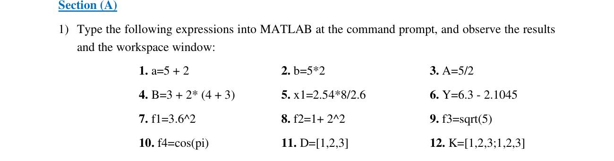
1.1 · Type expressions and read the answers
Warm-up: what does MATLAB show for each line?
1.1
a=5+2 % 7
b=5*2 % 10
A=5/2 % 2.5000 (a and A are different boxes: capitals matter)
B=3+2*(4+3) % 17
x1=2.54*8/2.6 % 7.8154
Y=6.3-2.1045 % 4.1955
f1=3.6^2 % 12.9600 (^ means power)
f2=1+2^2 % 5 (power before +)
f3=sqrt(5) % 2.2361
f4=cos(pi) % -1 (angles in radians, pi = 3.1416)
D=[1,2,3] % 1 2 3 (a row)
K=[1,2,3;1,2,3] % two rows: 1 2 3 / 1 2 3
Line by line
Order of operations is the same as in maths: brackets, then ^, then * /, then + -.
Every line without ; prints its name and value.
a and A are two different variables: MATLAB is case-sensitive.
Whole numbers print plainly (7); any result with decimals prints with 4 decimals (2.5000).
Sheet 1 Q8–11Final 2024 Q1 (same question)
As it appears in the sheet (Sheet 1 Q7–11)
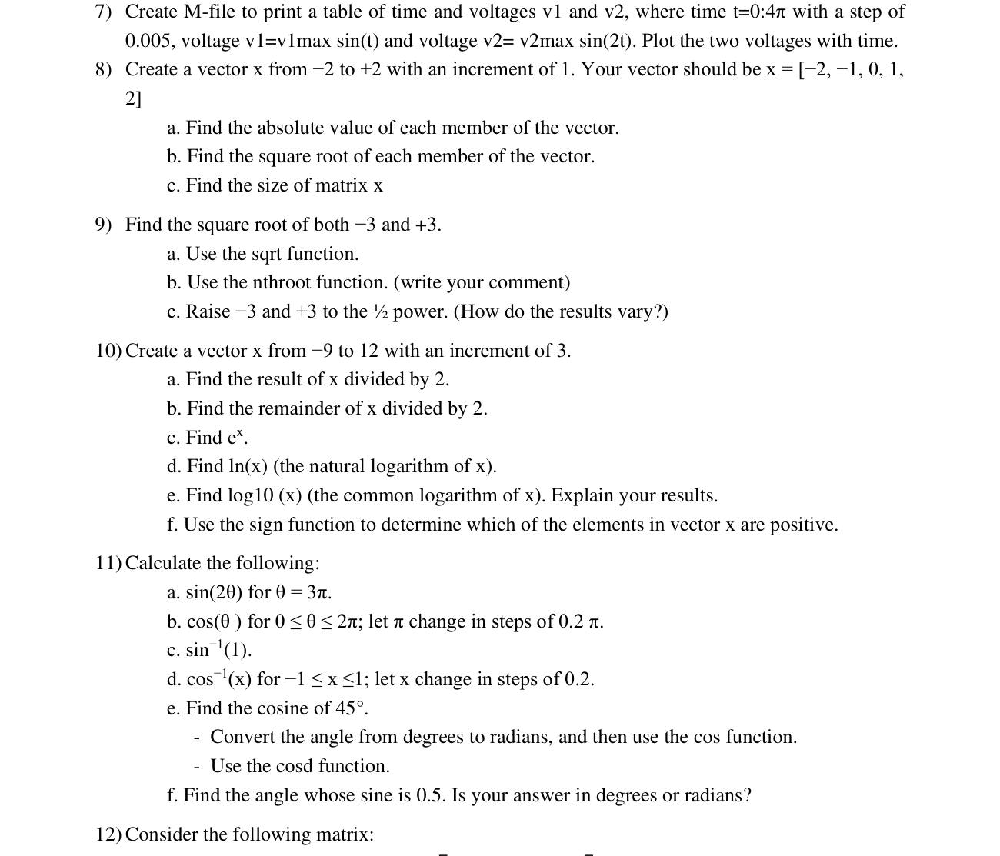
1.2 · Built-in functions on a vector
Make the vector x = −9, −6, …, 12 and apply the basic math functions to it; also square roots of −3 and simple trig.
%% Q8
x=-2:1:2 % -2 -1 0 1 2 (start : step : end)
abs(x) % 2 1 0 1 2
sqrt(x) % complex for negatives: 0+1.4142i ...
size(x) % 1 5 (1 row, 5 columns)
%% Q9
sqrt(-3) % 0 + 1.7321i
nthroot(-3,2) % ERROR: even root of a negative number
(-3)^(1/2) % 0.0000 + 1.7321i
%% Q10
x=-9:3:12;
a=x/2 % -4.5 -3 -1.5 0 1.5 3 4.5 6
b=rem(x,2) % -1 0 -1 0 1 0 1 0 (remainder keeps the sign of x)
c=exp(x) % e^x for each element
d=log(x) % natural log: complex for x<0, -Inf at 0
e=log10(x) % log base 10: same remarks
f=sign(x) % -1 -1 -1 0 1 1 1 1 -> positive where 1
%% Q11
sin(2*3*pi) % -7.3479e-16 (this is 0, tiny rounding error)
theta=0:0.2*pi:2*pi; cos(theta)
asin(1) % 1.5708 rad (= 90 degrees)
cos(45*pi/180) % 0.7071 convert degrees to radians first
cosd(45) % 0.7071 or use the d-version
asin(0.5) % 0.5236 -> radians (30 degrees); asind(0.5) gives 30
Line by line
-9:3:12 builds the list from −9 to 12 in steps of 3 (8 numbers).
x/2 divides every element (dividing by a single number needs no dot).
rem(x,2) is the remainder after dividing by 2: 0 for even numbers.
Logs of negative numbers are complex in MATLAB, and log(0) = −Inf: that is the "explain your results" part.
nthroot refuses even roots of negatives; sqrt and ^(1/2) give the complex answer 1.7321i.
sign(x) = 1 marks the positive elements: the last 4 (3, 6, 9, 12). sin, cos, asin work in radians; sind, cosd, asind in degrees.
MUST DOMid 2020 Q1 [5]Mid 2024/25 Q3 [5]Sheet 1 Q12–14
As it appears in the exam (Mid 2024/25 Q3)
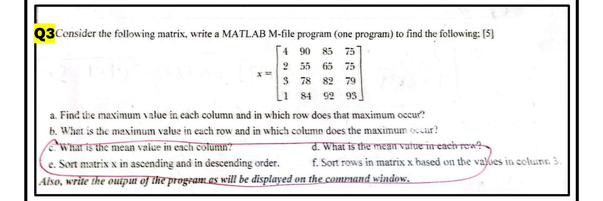
1.3 · Matrix statistics with exact output
Write one M-file that finds the maxima, means, medians, mode and sorted versions of the matrix, then write each result as it appears in the Command Window.
Given
x = [4 90 85 75; 2 55 65 75; 3 78 82 79; 1 84 92 93]. Use variables Fa…Fo, no input/disp/fprintf.
max per column + its row; max per row + its column; overall max; mean / median per column and row; mode; overall mean; sort up / down; sortrows; sortrows by column 3
1
clear all
clc
x=[4 90 85 75;2 55 65 75;3 78 82 79;1 84 92 93];
Fa=max(x) % max of each column
[a,b]=max(x); Fb=b % row of each max
Fc=max(x') % max of each row
[a,b]=max(x'); Fd=b % column of each max
Fe=max(max(x))
Ff=mean(x)
Fg=median(x)
Fh=mean(x')
Fi=median(x')
Fj=mode(x)
Fk=mean(mean(x))
Fl=sort(x)
Fm=sort(x,'descend')
Fn=sortrows(x)
Fo=sortrows(x,3)
transpose x' turns rows into columns, so the same function works on rows
Lecture 2: matrices, and solving circuits with them
In this lecture
Pick parts of a matrix and build bigger ones
Element-by-element math with the dot
Turn a circuit into a matrix equation and solve it (the most-asked exam topic)
Order: basics → indexing → two variables → DC mesh → DC nodal → AC nodal → 3-phase → feeder → houses.
From zero · matrices and the circuit recipe
1. Picking parts of a matrix
Every element has an address (row, column). A colon : alone means "all".
You write
Means
M = [1 2 3; 4 5 6]
2 rows, 3 columns
M(2,3)
6 (row 2, column 3)
M(:,1)
1 and 4, as a column (all rows, column 1)
M(1,:)
1 2 3 (row 1, all columns)
M(4)
5 (single number: counts down the columns 1,4,2,5…)
M(:)
everything as one long column: 1 4 2 5 3 6
M'
the transpose: 3 rows, 2 columns
2. The dot means "element by element"
[1 2 3].*[4 5 6] gives 4 10 18: each pair multiplied. Without the dot, * is matrix multiplication (rows × columns), which gives an error for two rows. Same for .^ and ./. Rule: when you mean "for every value", use the dot.
3. Why circuits become matrices
A circuit with two unknown currents gives two equations. For example:
4·I1 − 2·I2= 2−2·I1 + 6·I2= 6
Written as a table of numbers times a list of unknowns:
[ 4 −2 ; −2 6 ] · [ I1 ; I2 ]= [ 2 ; 6 ]
In MATLAB: type the table as Z, the right side as E, and write I = inv(Z)*E. MATLAB solves the equations (here I1 = 1.2, I2 = 1.4). Your job in the exam is only to build Z and E correctly.
4. Recipe: mesh analysis (loop currents)
Draw one clockwise current in each window of the circuit: I1, I2.
Diagonal of Z = sum of all resistances (impedances) in that loop.
Off-diagonal = minus the resistance shared by the two loops.
E = sum of the source voltages in each loop (+ if the source pushes the current the clockwise way).
A shared branch carries I1 − I2.
5. Recipe: nodal analysis (node voltages)
Pick the bottom wire as 0 V. Name the other junctions V1, V2.
Diagonal of Y = sum of 1/R (or 1/Z) of everything touching that node.
Off-diagonal = minus 1/R of the element between the two nodes.
I = current sources pushing into each node (a source E in series with R counts as E/R).
V = inv(Y)*I.
6. AC: same recipe with complex numbers
Inductor: ZL = j*2*pi*f*L. Capacitor: ZC = 1/(j*2*pi*f*C) (if the reactance XC is given directly: -j*XC). A source 120∠60°: 120*(cosd(60)+j*sind(60)).
Sheet 2 Q1Lecture 2 Exercise 2-1
As it appears in the sheet (Sheet 2 Q1)
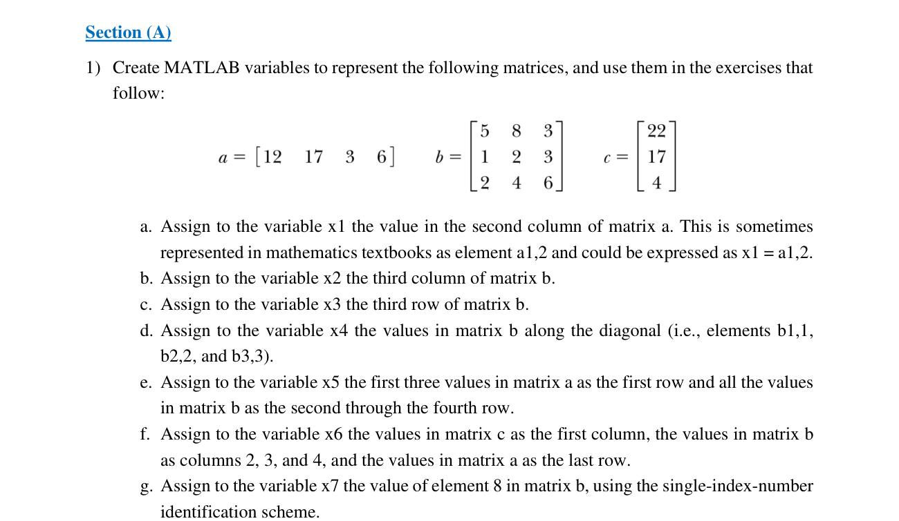
2.1 · Pick parts of matrices and build new ones
Use a = [12 17 3 6], b = [5 8 3; 1 2 3; 2 4 6], c = [22; 17; 4].
x1 … x8
2.1
a=[12 17 3 6]; b=[5 8 3;1 2 3;2 4 6]; c=[22;17;4];
x1=a(1,2) % 17
x2=b(:,3) % 3 ; 3 ; 6 (a column)
x3=b(3,:) % 2 4 6
x4=[b(1,1) b(2,2) b(3,3)] % 5 2 6 (or diag(b)')
x5=[a(1:3); b] % 4x3: first row 12 17 3, then b
x6=[c b; a] % 4x4: c beside b, a under them
x7=b(8) % 3 (count down columns: 5 1 2 8 2 4 3 3 ...)
x8=b(:) % b as one column
2.3 · DC mesh analysis with a swept source and a loss function
Find the value of E2 that gives zero current in R1. For every E2, compute the losses in R1, R2, R3 inside a function file plossfun.m, print a table, and sketch PlossR1 against E2.
Circuit
Left mesh: E1 = 6 V, R1 = 2 Ω; middle branch: R2 = 2 Ω with E2; right mesh: R3 = 4 Ω, E3 = 2 V
Sweep
E2 = 0 : 0.5 : 20 V
E2 for IR1 = 0, table of E2, I1, I2, PlossR1–R3, sketch of PlossR1(E2), matrix or loop (which is better?)
1
Mesh equations (clockwise I1 left, I2 right; signs as in the doctor's model answer):
%% mainQ2.m
clear all, clc
R1=2; R2=2; R3=4;
z=[R1+R2 -R2; -R2 R2+R3]; % resistance matrix
k=1;
for E=0:0.5:20
E2(k)=E;
Em=[6-E; 2+E];
I=inv(z)*Em;
I1(k)=I(1); I2(k)=I(2);
[P1(k),P2(k),P3(k)]=plossfun(I1(k),I2(k),R1,R2,R3);
k=k+1;
end
b=find(abs(I1)<1e-6); % NOT I1==0
if isempty(b)
disp('none of the values of E2=0, 0.5, 1, ..., 20 give zero current through R1')
else
fprintf('The current through R1 = 0 at E2 = %4.2f V\n',E2(b))
end
Table=[E2',I1',I2',P1',P2',P3'];
disp(' E2 I1 I2 PlossR1 PlossR2 PlossR3')
fprintf('%7.2f %8.4f %8.4f %8.4f %8.4f %8.4f\n',Table')
plot(E2,P1), grid on, xlabel('E2 (V)'), ylabel('PlossR1 (W)')
%% plossfun.m (separate file)
function [PlossR1,PlossR2,PlossR3]=plossfun(I1,I2,R1,R2,R3)
PlossR1=I1^2*R1;
PlossR2=(I1-I2)^2*R2; % R2 carries I1-I2
PlossR3=I2^2*R3;
end
Output: write this on paper under your code (first and middle rows)
The current through R1 = 0 at E2 = 10.00 V
E2 I1 I2 PlossR1 PlossR2 PlossR3
0.00 2.0000 1.0000 8.0000 2.0000 4.0000
0.50 1.9000 1.0500 7.2200 1.4450 4.4100
1.00 1.8000 1.1000 6.4800 0.9800 4.8400
...
10.00 0.0000 2.0000 0.0000 8.0000 16.0000
...
20.00 -2.0000 3.0000 8.0000 50.0000 36.0000
3
Sketch: PlossR1 = 2(2 − 0.2E2)² is a parabola, 8 W at 0 V and 20 V, zero at 10 V.
Swipe sideways to see the whole plot →
Matrix or loop? Matrix (vector) form is faster and shorter; the loop is easier to follow for one value at a time.
Line by line
z=[R1+R2 -R2; -R2 R2+R3]: the mesh recipe (diagonal = loop total, off-diagonal = minus shared R2).
for E=0:0.5:20 repeats the solution 41 times; k counts the passes so each result is stored at position k.
Em=[6-E; 2+E]: source voltages in loop 1 and loop 2 for this E2.
inv(z)*Em solves for both mesh currents.
plossfun returns I²R for each resistor; R2 carries I1 − I2.
find(abs(I1)<1e-6) finds where I1 is (practically) zero; isempty checks if nothing was found.
Table' makes fprintf print one row per line.
E2 = 10 V gives IR1 = 0. At the original E2 = 4 V: I1 = 1.2 A, I2 = 1.4 A (current in R3 = 1.4 A), losses 2.88 / 0.08 / 7.84 W, so R3 exceeds a 3 W rating (Sheet 2 Q9).
Sheet 2 Q12
As it appears in the sheet (Sheet 2 Q12)
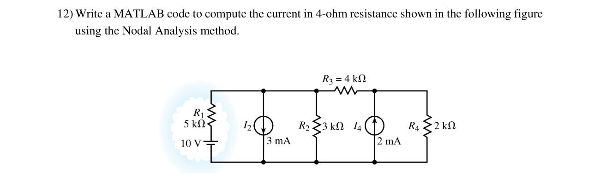
2.4 · DC nodal analysis (stepping stone to 2.5)
Find the current in R3 = 4 kΩ with nodal analysis. 10 V has + on top; I2 = 3 mA points down; I4 = 2 mA points up.
Off-diagonal: minus the element between the nodes (R3).
The 10 V with its 5 kΩ becomes a 2 mA current into node 1; I2 leaves node 1, so −3 mA.
A negative answer only means the current flows opposite to the direction you assumed.
V1 = −0.476 V, V2 = 2.508 V, IR3 = −0.746 mA: 0.746 mA flows from node 2 to node 1.
MUST DOMid 16-11-2025 Q3Sheet 2 Q14
As it appears in the exam (Mid 16-11-2025 Q3)
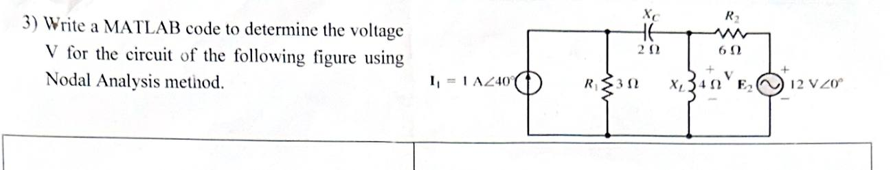
2.5 · AC nodal analysis
Find the voltage V across the inductor using nodal analysis.
Circuit
Current source I1 = 1∠40° A into node 1; R1 = 3 Ω node 1–ground; XC = 2 Ω between node 1 and node 2; XL = 4 Ω node 2–ground (V across it); R2 = 6 Ω from node 2 to source E2 = 12∠0° V
V (node 2 voltage) in rectangular and polar form
1
Replace E2 in series with R2 by a current source E2/R2 into node 2.
2.6 · Balanced 3-phase circuit: IbB, VAN and a frequency sweep
(a) Find IbB and VAN at f = 100 Hz by mesh analysis and print them with disp and fprintf. (b) Repeat for f = 25 : 1 : 250 Hz (or 50 : 50 : 25000 Hz) using matrices, with total load power, line losses and generated power, and print a table. (c) Plot the results against f with subplot.
Sources
Van = 120∠60°, Vbn = 120∠−60°, Vcn = 120∠180° V
Each line
2 Ω + 1.6 mH
Each load phase (star)
10 Ω + 10 mH
IbB, VAN (complex), and for every f: ZaA, ZAN, IbB, VAN, Pload, Ploss, Pgen
a
clear all, clc
%% System data and impedance matrix
f=100;
van=120*(cosd(60)+j*sind(60));
vbn=120*(cosd(-60)+j*sind(-60));
vcn=120*(cosd(180)+j*sind(180));
zaA=2+j*(2*pi*f*1.6e-3); zbB=zaA; zcC=zaA;
zAN=10+j*(2*pi*f*10e-3); zBN=zAN; zCN=zAN;
%% Mesh solving
A=[zaA+zAN+zBN+zbB -1*(zBN+zbB);
-1*(zBN+zbB) zcC+zCN+zBN+zbB];
B=[van-vbn; vbn-vcn];
I=inv(A)*B;
IbB=I(2)-I(1)
VAN=I(1)*zAN
disp(' ====== the results of part-1 ====== ')
fprintf('The current IbB= %f %+fj \n',real(IbB),imag(IbB))
fprintf('The voltage VAN= %f %+fj \n',real(VAN),imag(VAN))
Output: write this on paper under your code
====== the results of part-1 ======
The current IbB= -0.189946 -8.544886j
The voltage VAN= 49.139634 +88.172302j
%% Part b: matrix form (no loop) - the doctor's "matrix representation"
f=(25:1:250)'; % or (50:50:25000)'
zaA=2+j*2*pi*f*1.6e-3;
zAN=10+j*2*pi*f*10e-3;
IaA=van./(zaA+zAN); % balanced: one phase is enough
IbB=IaA*(cosd(-120)+j*sind(-120));
VAN=IaA.*zAN;
Pload=3*abs(IaA).^2*10;
Ploss=3*abs(IaA).^2*2;
Pgen=Pload+Ploss;
Table=[f, real(VAN), imag(VAN), Pgen];
disp(' f VAN (complex) Pgen')
fprintf('%6.0f %10.4f %+10.4fj %10.4f\n',Table')
Output: write this on paper under your code (rows)
f VAN (complex) Pgen
25 49.5956 +86.9257j 3518.8673
26 49.5818 +86.9409j ...
100 49.1396 +88.1723j 2629.8413
250 49.8308 +89.4774j 1089.0448
loop version (Final 2022 part b): put the part-a lines inside for k=1:length(f) ... IbB(k)=I(2)-I(1); end
... at the end of a line continues it on the next line.
*1000 turns kW into W.
S = P + jQ; its size abs(S) is the loading in VA.
pf = cos(φ) with φ = atan(Q/P).
3-phase line current I = S / (√3 · 380).
Qc = Q − P·tan(acos 0.95) is the kVAr to inject (positive) to reach pf 0.95.
Max 2.173 MVA at hour 20 (heaviest hour), mean 1.650 MVA, best pf 0.9415 at hour 9, worst 0.8908 at hour 5, circuit breaker ≥ 1.25 × 3301 A = 4126 A.
Mid 16-11-2025 Q2like Sheet 1 Q19
As it appears in the exam (Mid 16-11-2025 Q2)
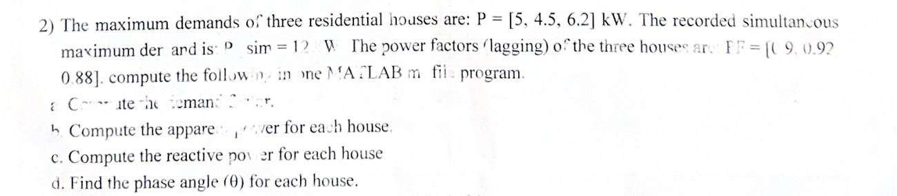
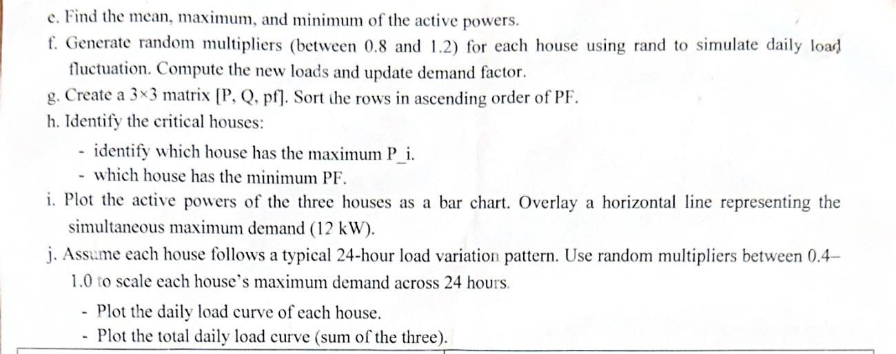
2.8 · Three houses: demand, S, Q, θ, sorting, bar plot
In one M-file: compute the factor that compares simultaneous and individual maximum demand, S, Q and θ for each house, statistics, random fluctuation, a sorted [P Q pf] matrix, the critical houses, a bar chart with a 12 kW line, and 24-hour load curves.
clear all, clc
P=[5 4.5 6.2]; Psim=12; pf=[0.9 0.92 0.88];
%% a
DF=Psim/sum(P) % 12/15.7
%% b, c, d
S=P./pf % kVA
Q=S.*sin(acos(pf)) % kVAr
theta=acosd(pf) % degrees
%% e
Pmean=mean(P), Pmax=max(P), Pmin=min(P)
%% f random multipliers 0.8 - 1.2
m=0.8+0.4*rand(1,3);
Pnew=P.*m
DFnew=Psim/sum(Pnew)
%% g
M=[P' Q' pf'];
Msorted=sortrows(M,3) % ascending pf
%% h
[Pm,hP]=max(P); [pfm,hpf]=min(pf);
fprintf('House %d has max P = %.1f kW\n',hP,Pm)
fprintf('House %d has min pf = %.2f\n',hpf,pfm)
%% i
figure, bar(P), hold on
plot([0.5 3.5],[Psim Psim],'r--'), hold off
xlabel('House'), ylabel('P (kW)'), legend('P_i','P_{sim}=12 kW')
%% j 24-hour curves
k=0.4+0.6*rand(24,3);
Pday=k.*repmat(P,24,1);
figure, subplot(2,1,1), plot(1:24,Pday), title('Daily load of each house')
subplot(2,1,2), plot(1:24,sum(Pday,2)), title('Total daily load')
Output: write this on paper under your code (fixed parts)
DF =
0.7643
S =
5.5556 4.8913 7.0455
Q =
2.4216 1.9170 3.3464
theta =
25.8419 23.0739 28.3576
Pmean = 5.2333 Pmax = 6.2000 Pmin = 4.5000
Msorted =
6.2000 3.3464 0.8800
5.0000 2.4216 0.9000
4.5000 1.9170 0.9200
House 3 has max P = 6.2 kW
House 3 has min pf = 0.88
rand changes every run, so Pnew and DFnew have no fixed answer
Swipe sideways →
Line by line
P./pf divides element by element: S of each house.
sin(acos(pf)) = sin θ, so Q = S sin θ.
0.8+0.4*rand(1,3) gives three random numbers between 0.8 and 1.2.
sortrows(M,3) sorts the rows by column 3 (pf).
repmat(P,24,1) copies the row P 24 times so it matches the 24 × 3 random table.
12/15.7 = 0.7643 (its inverse 15.7/12 = 1.308 is the diversity factor; see the note below). House 3 is critical: largest P (6.2 kW) and lowest pf (0.88).
Label: extra, not from the slides
The exam calls it "demand factor", but the only data given are individual and simultaneous maxima. The textbook names are: diversity factor = ΣPi/Psim = 1.308 and coincidence factor = Psim/ΣPi = 0.764. Write the formula you use next to the code so the marker can follow it.
Memorise
Write this
It means
Example
[1 2 3; 4 5 6]
A matrix: space = next column, ; = next row
0:0.5:2
From 0 to 2 in steps of 0.5
0 0.5 1 1.5 2
M(2,3) M(:,1) M(1,:)
One element / all of column 1 / all of row 1
x.*y
Multiply element by element (needs the dot)
[1 2].*[3 4] → 3 8
I=inv(Z)*E
Solve the circuit equations Z·I = E
mesh currents I1, I2
V=inv(Y)*I
Solve nodal equations Y·V = I
node voltages
120*(cosd(60)+j*sind(60))
The phasor 120∠60°
j*2*pi*f*L 1/(j*2*pi*f*C)
Impedance of an inductor / a capacitor
zeros(m,n) ones(m,n) diag([1 2 3])
Matrix of zeros / of ones / with 1 2 3 on the diagonal
Exam traps
x*y on two rows is an error; use x.*y element by element.
M(8) counts down columns: in the 3×5 slide matrix, M(8) = M(2,3) = 4.
Don't use i or j as loop counters in AC problems; they stop meaning √−1.
Never test a computed current with == 0. Floating point gives 2.2×10⁻¹⁶, not 0. Use abs(I1)<1e-6.
Styles, labels, legends, several graphs in one window
Sketch on paper what MATLAB would draw
From zero · how a plot is made
A graph needs two lists of the same length: x values and y values. plot(x,y) puts a point at every (x, y) pair and joins them with lines. So every plotting answer has the same 3 steps:
Make x: x = 0:0.1*pi:2*pi; (from 0 to 2π in small steps)
Compute y from x: y = sin(x);
Plot, then decorate: plot(x,y), title('…'), xlabel('…'), ylabel('…'), grid on
Style string in quotes after x, y: line type + marker + colour, in any order. '--r' = dashed red, ':g' = dotted green, '-o' = solid with circles, '*' = stars only.
Several curves: list them in one call plot(x,y1,x,y2), or use hold on between plots. New window: figure. Grid of small graphs: subplot(rows,cols,number); numbers go left → right, then down:
You write
Draws in
subplot(2,2,1)
top-left
subplot(2,2,2)
top-right
subplot(2,2,3)
bottom-left
subplot(2,2,4)
bottom-right
subplot(3,1,2)
middle of 3 stacked graphs
On paper: draw the axes, label them, write the title, and mark the important values (peaks, where it crosses zero, the maximum point). It does not need to be perfect, just the right shape and the right numbers.
Sheet 3 Q1Solved in Lecture 3
As it appears in the sheet (Sheet 3 Q1)
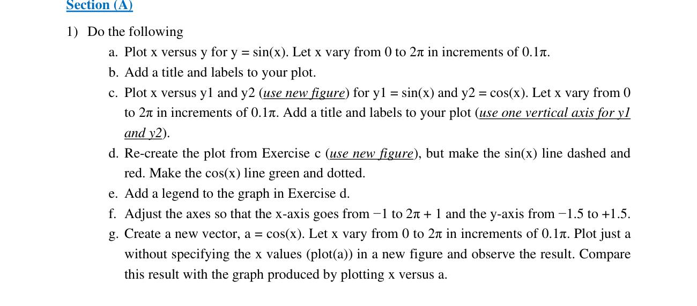
3.1 · Basic plots: sin and cos
x from 0 to 2π in steps of 0.1π.
a–g
3.1
%% a, b
x=0:0.1*pi:2*pi;
y=sin(x);
plot(x,y), title('x-y plotting'), xlabel('x-axis'), ylabel('y-axis')
%% c
y1=sin(x); y2=cos(x);
figure, plot(x,y1,x,y2)
%% d, e
figure, plot(x,y1,'--r',x,y2,':g')
legend('sin(x)','cos(x)')
%% f
axis([-1 2*pi+1 -1.5 1.5])
%% g
a=cos(x);
figure, plot(a) % x-axis = element number 1 ... 21
figure, plot(x,a) % x-axis = the angle 0 ... 2pi
Swipe sideways →
Sketch for d, e, f: sin dashed red, cos dotted green, x-axis from −1 to 2π + 1.
Line by line
0:0.1*pi:2*pi gives 21 angles.
figure opens a new window, so each part gets its own graph.
legend names the curves in the order they were plotted.
axis([xmin xmax ymin ymax]) sets the visible range.
In g, plot(a) looks the same shape but the x-axis runs 1 to 21 (the position of each value), not 0 to 6.28.
Sheet 3 Q5Solved in Lecture 3
As it appears in the sheet (Sheet 3 Q5)
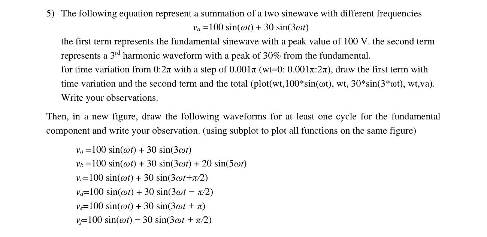
3.2 · Adding harmonics: what odd harmonics do
va = 100 sin ωt + 30 sin 3ωt for ωt = 0 : 0.001π : 2π, then six variations with subplot.
3*t makes the 3rd harmonic: 3 cycles while the fundamental does 1.
+pi/2 inside the sine shifts the harmonic by 90°.
subplot(3,2,k): 3 rows × 2 columns of graphs.
Observation: with only odd harmonics the negative half is a mirror image of the positive half, v(t + T/2) = −v(t), whatever the phase shift. (Sheet 3 Q8 adds a dc term 32: the whole wave just moves up by 32.)
Undated mid Q2 [7]Mid 2023/24 Q2 [6]Sheet 3 Q9
As it appears in the exam (Mid 2023/24 Q2)
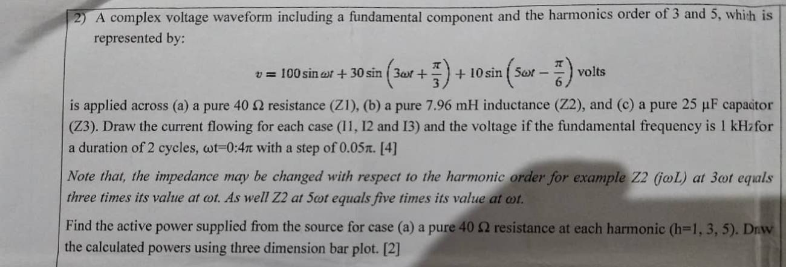
3.3 · A harmonic voltage across R, L and C
Draw the current in each element and the voltage for two cycles, using subplot, a title for each, and different styles for v and i. Then find the active power in R at each harmonic and draw it with a 3-D bar plot.
Voltage
v = 100 sin ωt + 30 sin(3ωt + π/3) + 10 sin(5ωt − π/6) V, f = 1 kHz
Loads
(a) R = 40 Ω, (b) L = 7.96 mH, (c) C = 25 µF; ωt = 0 : 0.05π : 4π
iR, iL, iC; P at h = 1, 3, 5; bar3
1
Each harmonic h sees its own impedance:
XL= 2π·1000·7.96×10⁻³ = 50.01 Ω, at h: h·XLXC= 1/(2π·1000·25×10⁻⁶) = 6.366 Ω, at h: XC/hiLlags v by 90°, iC leads by 90°
clear all, clc
wt=0:0.05*pi:4*pi; % 2 cycles
f=1000; w=2*pi*f;
R=40; L=7.96e-3; C=25e-6;
XL=w*L; XC=1/(w*C);
v=100*sin(wt)+30*sin(3*wt+pi/3)+10*sin(5*wt-pi/6);
I1=v/R;
I2=100/XL*sin(wt-pi/2)+30/(3*XL)*sin(3*wt+pi/3-pi/2) ...
+10/(5*XL)*sin(5*wt-pi/6-pi/2);
I3=100/XC*sin(wt+pi/2)+30/(XC/3)*sin(3*wt+pi/3+pi/2) ...
+10/(XC/5)*sin(5*wt-pi/6+pi/2);
subplot(3,1,1), plotyy(wt,v,wt,I1), title('(a) pure R = 40 \Omega')
subplot(3,1,2), plot(wt,v,'-b',wt,I2*20,'--r'), title('(b) pure L, i x 20')
subplot(3,1,3), plot(wt,v,'-b',wt,I3,':k'), title('(c) pure C')
%% power in R at h = 1, 3, 5
Vh=[100 30 10];
P=Vh.^2/(2*R) % P = Vm^2 / 2R
figure, bar3(P), title('Active power at h = 1, 3, 5')
Output: write this on paper under your code
P =
125.0000 11.2500 1.2500
Swipe sideways →
To scale. iR has the same shape as v. In the inductor the 5th harmonic almost vanishes (its impedance is 5× bigger). In the capacitor the harmonics grow (impedance 5× smaller), so iC is very distorted.
XL and XC at the fundamental; harmonic h uses h·XL and XC/h.
Inductor current lags by 90° (−π/2), capacitor current leads by 90° (+π/2).
subplot(3,1,k) stacks the three cases.
P=Vh.^2/(2*R): power of each harmonic in R; bar3 draws it in 3-D.
XL = 50.01 Ω, XC = 6.366 Ω; P = 125, 11.25, 1.25 W (total 137.5 W). Peak harmonic currents: R 2.5 / 0.75 / 0.25 A; L 2.00 / 0.20 / 0.04 A; C 15.71 / 14.14 / 7.85 A.
Mid 2024/25 Q2 [7]Final 2024 Q2
As it appears in the exam (Mid 2024/25 Q2)
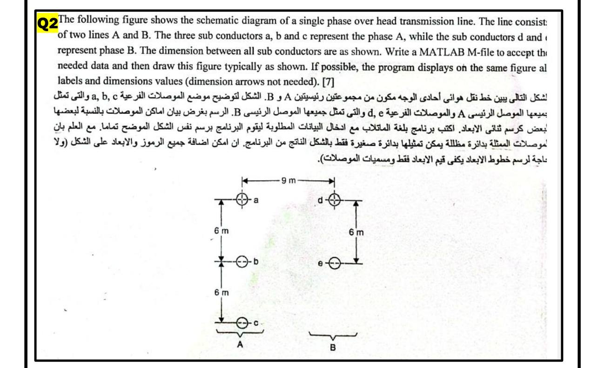
3.4 · Draw a transmission-line layout with plot and text
A single-phase line has two conductor groups: A (sub-conductors a, b, c) and B (d, e). Accept the dimensions from the user and draw the layout with labels and dimension values.
Given
Horizontal distance A–B = 9 m; vertical spacing = 6 m (a–b, b–c, d–e)
the figure, drawn by MATLAB
1
clear all, clc
D=input('Distance between A and B (m) = '); % 9
s=input('Vertical spacing (m) = '); % 6
xA=[0 0 0]; yA=[2*s s 0]; % a b c
xB=[D D]; yB=[2*s s]; % d e
plot(xA,yA,'ko',xB,yB,'ko','MarkerSize',12), hold on
plot(xA,yA,'k+',xB,yB,'k+','MarkerSize',12)
text(xA+0.6,yA,{'a','b','c'})
text(xB-1.2,yB,{'d','e'})
text(-0.3,-2,'A'), text(D-0.3,-2,'B')
text(D/2-0.6,2*s+1.2,[num2str(D) ' m'])
text(-2.6,1.5*s,[num2str(s) ' m']), text(-2.6,0.5*s,[num2str(s) ' m'])
text(D+0.6,1.5*s,[num2str(s) ' m'])
axis([-4 D+4 -4 2*s+3]), axis equal, hold off
title('Single-phase overhead line: groups A and B')
Swipe sideways →
Line by line
Coordinates: group A at x = 0 (heights 12, 6, 0), group B at x = 9 (heights 12, 6).
'ko' = black circles; plotting 'k+' on top gives the ⊕ symbol.
text writes each label and dimension at a chosen point.
axis equal keeps metres the same length on both axes.
Conductors at a(0,12), b(0,6), c(0,0), d(9,12), e(9,6) with labels and the 9 m / 6 m values written by text().
Sheet 3 Q11Final 2021 Q3
As it appears in the sheet (Sheet 3 Q11)
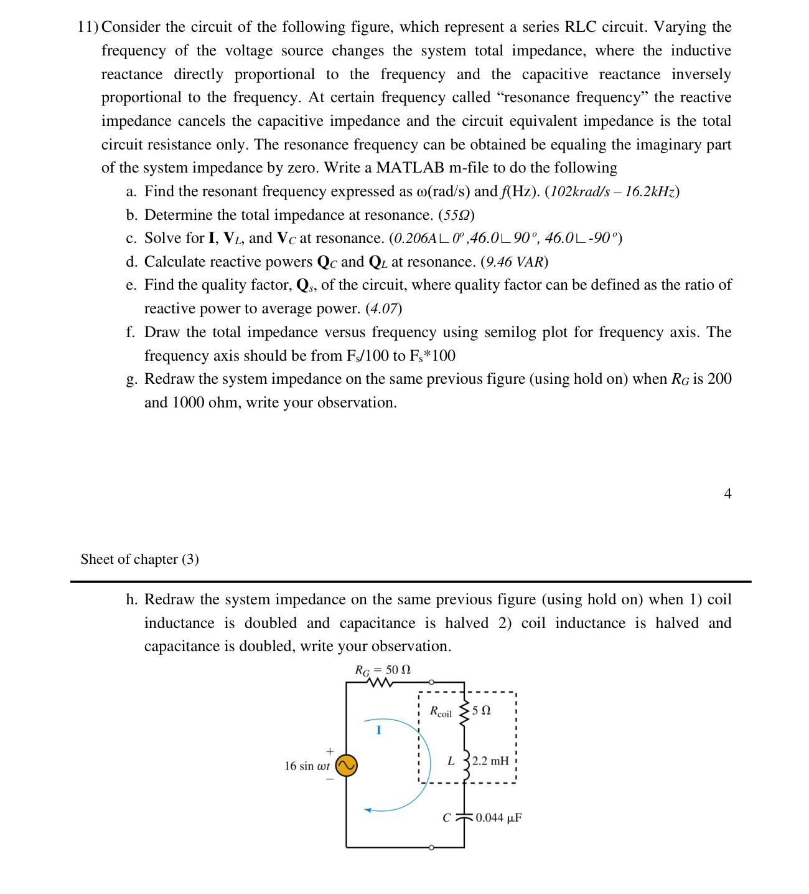
3.5 · Series RLC resonance and a semilog plot
RG = 50 Ω, Rcoil = 5 Ω, L = 2.2 mH, C = 0.044 µF, source 16 sin ωt.
ωs, fs, Z, I, VL, VC, Q, Qs, plot of |Z| against f
clear all, clc
RG=50; Rc=5; L=2.2e-3; C=0.044e-6; E=16/sqrt(2); % rms
R=RG+Rc;
ws=1/sqrt(L*C), fs=ws/(2*pi) % a
Zs=R % b
I=E/Zs % c
XL=ws*L; XC=1/(ws*C);
VL=I*XL, VC=I*XC
QL=I^2*XL, QC=I^2*XC % d
Qs=QL/(I^2*R) % e
f=linspace(fs/100,fs*100,2000); w=2*pi*f;
semilogx(f,abs(R+j*(w*L-1./(w*C)))), grid on, hold on % f
semilogx(f,abs(200+Rc+j*(w*L-1./(w*C)))) % g
semilogx(f,abs(1000+Rc+j*(w*L-1./(w*C))))
xlabel('f (Hz)'), ylabel('|Z| (\Omega)'), legend('R_G=50','R_G=200','R_G=1000')
Swipe sideways →
Line by line
At resonance the reactances cancel, so the impedance is only the resistance.
linspace(a,b,n) makes n points from a to b.
semilogx uses a log scale on the frequency axis (Fs/100 to Fs×100 = 4 decades).
1./(w*C): the dot is needed because w is a vector.
ωs = 101.6 krad/s, fs = 16.18 kHz, Z = 55 Ω, I = 0.206 A, VL = VC = 46.0 V, Q = 9.46 VAR, Qs = 4.07 (match the values printed in the sheet). Bigger RG → shallower, wider dip. Doubling L and halving C keeps fs but makes the dip sharper; the opposite makes it wider.
Memorise
Write this
It means
Example
plot(x,y)
Draw y against x
plot(x,y,'--r')
Dashed red line (line style + colour)
':g' = dotted green
title xlabel ylabel legend grid on
Names and grid, written after plot
hold on / hold off
Keep the old curve when drawing a new one
figure
Open a new graph window
subplot(2,1,1)
Split the window into 2 rows × 1 column, draw in box 1
axis([0 10 -1 1])
Show x from 0 to 10 and y from −1 to 1
text(x,y,'A')
Write the text A on the graph at point (x, y)
plotyy(x,y1,x,y2)
Two curves, each with its own y-axis
bar(P) bar3(P) pie(P)
Bar chart / 3-D bar chart / pie chart
polar(theta,r)
Polar plot
semilogx semilogy loglog
Log scale on x / on y / on both
Exam traps
plot(a) with one vector uses the element number (1, 2, 3 …) as x.
plot(A) with one complex vector plots imaginary against real.
Without hold on, a second plot erases the first.
In subplot(3,2,4) box 4 is row 2, column 2.
Straight lines (Sheet 3 Q4): y = 5x + 3 → normal axes; y = 3x² and y = 1/x → loglog; y = 12ex+2 → semilogy.
What a function file is and why there are two files
The first line of a function
The exam layout: mainQ2.m calls funQ2.m
From zero · what a function is
You already use functions: sqrt(9) takes 9 and gives back 3. A user-defined function is one you write yourself, in its own file, so the main program can use it as many times as it wants.
So a function question always has two files:
The function file (e.g. plossfun.m): does one calculation.
The main program (e.g. mainQ2.m): gives it numbers and uses the answer.
The first line of a function file
Part of function [P1,P2,P3]=plossfun(I1,I2,R1,R2,R3)
Meaning
function
the keyword that says "this file is a function"
[P1,P2,P3]
the outputs it gives back (one output needs no brackets)
=
plossfun
the name; the file must be saved as plossfun.m
(I1,I2,R1,R2,R3)
the inputs it receives
Inside, you must give every output a value. The function's variables are private: the main program only sees what is returned.
Calling it from the main program: [a,b,c] = plossfun(2,1,2,2,4). The values go in by position: 2 → I1, 1 → I2, …
Sheet 4&5 Q1
As it appears in the sheet (Sheet 4&5 Q1)
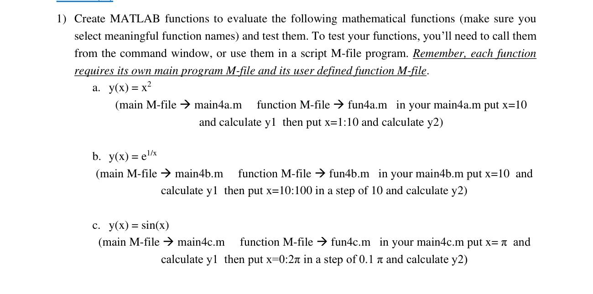
4.1 · The simplest function: y = x²
Write fun4a.m for y = x² and test it from main4a.m with x = 10 and x = 1:10.
the two files and their output
4.1
%% fun4a.m
function y=fun4a(x)
y=x.^2; % .^ so it also works for a vector
end
%% main4a.m
clear all, clc
x=10;
y1=fun4a(x)
x=1:10;
y2=fun4a(x)
Output: write this on paper under your code
y1 =
100
y2 =
1 4 9 16 25 36 49 64 81 100
Line by line
First line: output y, name fun4a, input x.
The main program never sees the inside of the function, only y.
Without the dot, x^2 would fail for the vector 1:10.
y1 = 100; y2 = 1 4 9 … 100. Parts b and c are the same with y = exp(1./x) and y = sin(x).
Undated mid Q3 [7]Mid 2023/24 Q3 [5]Sheet 4 Q2–3
As it appears in the exam (Mid 2023/24 Q3)
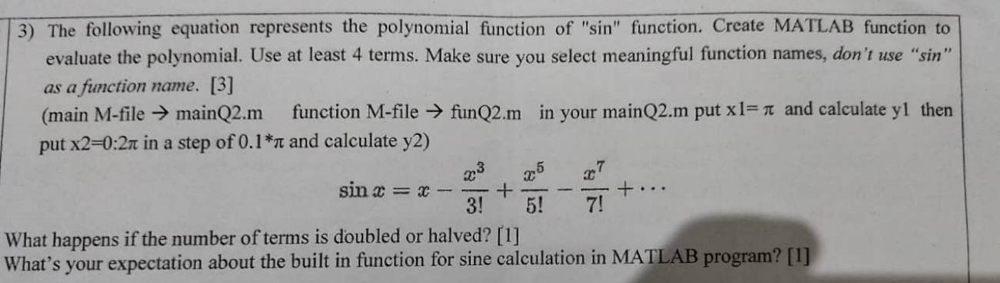
4.2 · The sine series as a function
Write a function that evaluates sin x = x − x³/3! + x⁵/5! − x⁷/7! + … with at least 4 terms (don't name it sin). In mainQ2.m compute y1 at x1 = π and y2 for x2 = 0 : 0.1π : 2π. What if the number of terms is doubled or halved? What do you expect of MATLAB's built-in sin?
Files
main M-file mainQ2.m, function M-file funQ2.m
the two files, y1, the effect of the number of terms
1
%% funQ2.m
function y=funQ2(x)
y=x-x.^3/factorial(3)+x.^5/factorial(5)-x.^7/factorial(7);
end
%% mainQ2.m
clear all, clc
x1=pi;
y1=funQ2(x1)
x2=0:0.1*pi:2*pi;
y2=funQ2(x2);
plot(x2,y2,'-o',x2,sin(x2),'--'), grid on
legend('4-term series','built-in sin')
general n terms with a loop (Sheet 4 Q3, fun4Q3c):
function y=sinN(x,N)
y=0;
for n=0:N-1
y=y+(-1)^n*x.^(2*n+1)/factorial(2*n+1);
end
end
Output: write this on paper under your code
y1 =
-0.0752
terms
x = π (true 0)
x = 2π (true 0)
x = π/2 (true 1)
2
−2.0261
−35.0585
0.9248
3
0.5240
46.5467
1.0045
4
−0.0752
−30.1591
0.9998
6
−0.0004
−3.1951
1.0000
8
0.0000
−0.0932
1.0000
10
0.0000
−0.0010
1.0000
Doubled terms → more accurate, especially for large x. Halved terms → large error away from x = 0. The error always grows with |x|.
Built-in sin → accurate to machine precision for any x (it reduces the angle first, then uses an optimised approximation).
Line by line
The function file holds the formula; .^ and ./ make it work for x = π and for the vector x2.
factorial(3) = 3! = 6.
The main program calls it twice: once with one number, once with 21 angles.
Plotting the built-in sin on top shows the error.
y1 = −0.0752 with 4 terms (true value 0). More terms = smaller error; the built-in sin is exact to about 10⁻¹⁶.
Mid 16-11-2025 Q5
As it appears in the exam (Mid 16-11-2025 Q5)
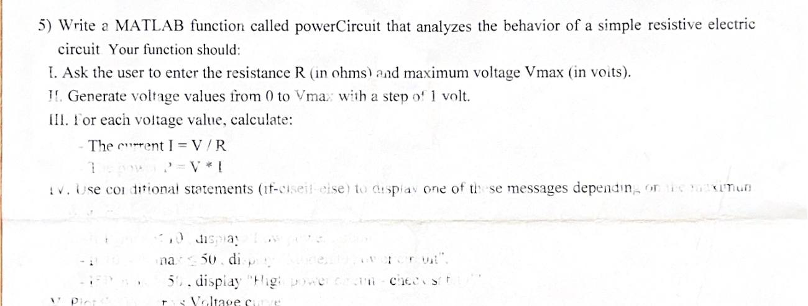
4.3 · Function powerCircuit with if / elseif
Write a function that asks for R and Vmax, makes V = 0 : 1 : Vmax, computes I = V/R and P = V·I, prints a message depending on the maximum power, and plots power against voltage.
Messages
Pmax < 10 → "Low power circuit"; 10 ≤ Pmax ≤ 50 → "Moderate power circuit"; Pmax > 50 → "High power circuit - check safety!" (the scan is faded here; these are the readable limits)
the function file and its output
1
function powerCircuit()
R=input('Enter the resistance R (ohm) = ');
Vmax=input('Enter the maximum voltage Vmax (V) = ');
V=0:1:Vmax;
I=V/R;
P=V.*I; % element by element
Pmax=max(P);
if Pmax<10
disp('Low power circuit')
elseif Pmax<=50
disp('Moderate power circuit')
else
disp('High power circuit - check safety!')
end
plot(V,P,'-o'), grid on
xlabel('Voltage (V)'), ylabel('Power (W)')
title('Power vs Voltage')
end
Output: write this on paper under your code (example)
>> powerCircuit
Enter the resistance R (ohm) = 10
Enter the maximum voltage Vmax (V) = 20
Moderate power circuit
Swipe sideways →
R = 10 Ω, Vmax = 20 V: P = V²/R is a parabola reaching 40 W, so the message is "Moderate"
Line by line
function powerCircuit(): no inputs or outputs, it asks the user itself.
V=0:1:Vmax, then I=V/R and P=V.*I for every voltage.
The if / elseif / else picks one of the three messages from Pmax.
Last, the plot of P against V.
Pmax = Vmax²/R decides the message: 10 Ω and 5 V → 2.5 W Low; 20 V → 40 W Moderate; 30 V → 90 W High.
Quiz 2
As it appears in Quiz 2
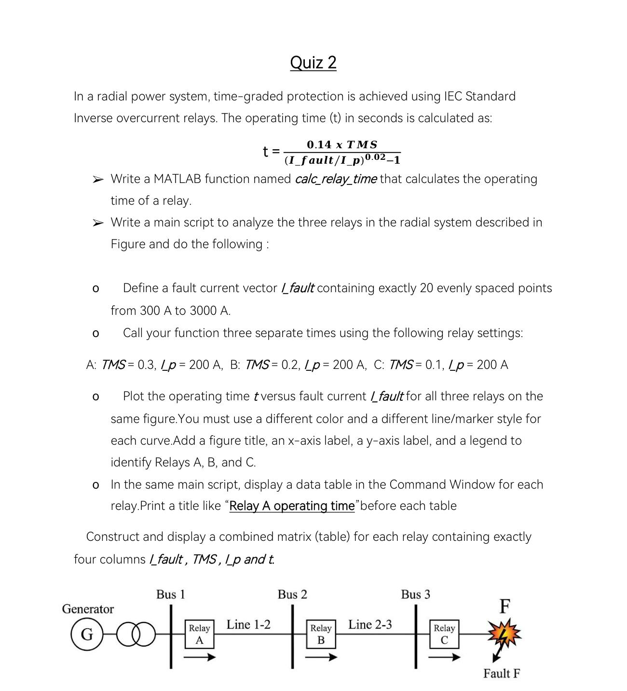
4.4 · Relay operating time (function + three calls + tables)
IEC standard-inverse relay: t = 0.14·TMS / ((If/Ip)0.02 − 1). Write calc_relay_time, call it for relays A, B, C, plot all three curves with different styles, and print a 4-column table for each.
Given
I_fault = 20 points from 300 to 3000 A; TMS = 0.3, 0.2, 0.1; Ip = 200 A
function, plot, tables
1
%% calc_relay_time.m
function t=calc_relay_time(I_fault,TMS,I_p)
t=0.14*TMS./((I_fault/I_p).^0.02-1);
end
%% main script
clear all, clc
I_fault=linspace(300,3000,20);
tA=calc_relay_time(I_fault,0.3,200);
tB=calc_relay_time(I_fault,0.2,200);
tC=calc_relay_time(I_fault,0.1,200);
plot(I_fault,tA,'-ob',I_fault,tB,'--sr',I_fault,tC,':^k')
title('IEC standard inverse relays'), xlabel('I_{fault} (A)')
ylabel('t (s)'), legend('Relay A','Relay B','Relay C'), grid on
n=length(I_fault);
disp('Relay A operating time')
TA=[I_fault' 0.3*ones(n,1) 200*ones(n,1) tA']
disp('Relay B operating time')
TB=[I_fault' 0.2*ones(n,1) 200*ones(n,1) tB']
disp('Relay C operating time')
TC=[I_fault' 0.1*ones(n,1) 200*ones(n,1) tC']
Swipe sideways →
Line by line
./ and .^ because I_fault is a vector of 20 values.
Same function, called three times with different TMS.
0.3*ones(n,1) makes a column of 0.3s so every table has 4 columns of equal length.
At 300 A: tA = 5.158 s, tB = 3.439 s, tC = 1.719 s; at 3000 A: 0.755, 0.503, 0.252 s. Time ∝ TMS, so the curves keep the same shape.
Quiz Ch 4&5In Lecture 5 slides
As it appears in the lecture (Quiz Ch 4 & 5)
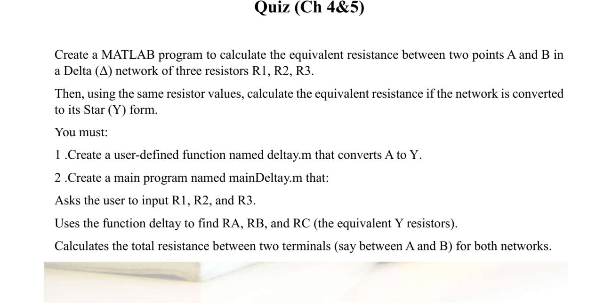
4.5 · Delta to star (Δ → Y) with a function
Δ network: R1 between A–B, R2 between B–C, R3 between C–A.
Almost every exam question ends with "use disp and fprintf", so learn the fprintf pattern well.
From zero · input, disp, fprintf
input: the program stops and waits
R = input('Enter R = '); shows the text Enter R =; whatever the user types is stored in R. For text, add 's': name = input('Name: ','s');
disp: print as it is
disp('Results') prints the text. disp(x) prints the value of x without the "x =" line.
fprintf: print with numbers placed inside text
Write the sentence, and put a placeholder where each number goes. The numbers come after the comma, in order.
You write
Prints / means
fprintf('V = %8.2f volt\n', 3.5)
V = 3.50 volt
%8.2f
a number, 8 characters wide, 2 decimals
%d
a whole number
%e
exponential: 3.500000e+00
%s
text
\n
go to a new line (without it, the next print continues on the same line)
fprintf('%d %d\n', a, b)
two placeholders take a and b in order
Printing a table: the doctor's pattern
fprintf takes numbers from a matrix column by column and repeats the sentence until the numbers run out. To print each row of a table on one line, give it the transpose: fprintf('%6.2f %8.4f\n', Table').
Complex numbers: one %f prints only the real part. Print both parts: fprintf('I = %f %+fj\n', real(I), imag(I)) (the + makes the sign always show).
Sheet 4&5 Q6Solved in Lecture 5
As it appears in the sheet (Sheet 4&5 Q6)
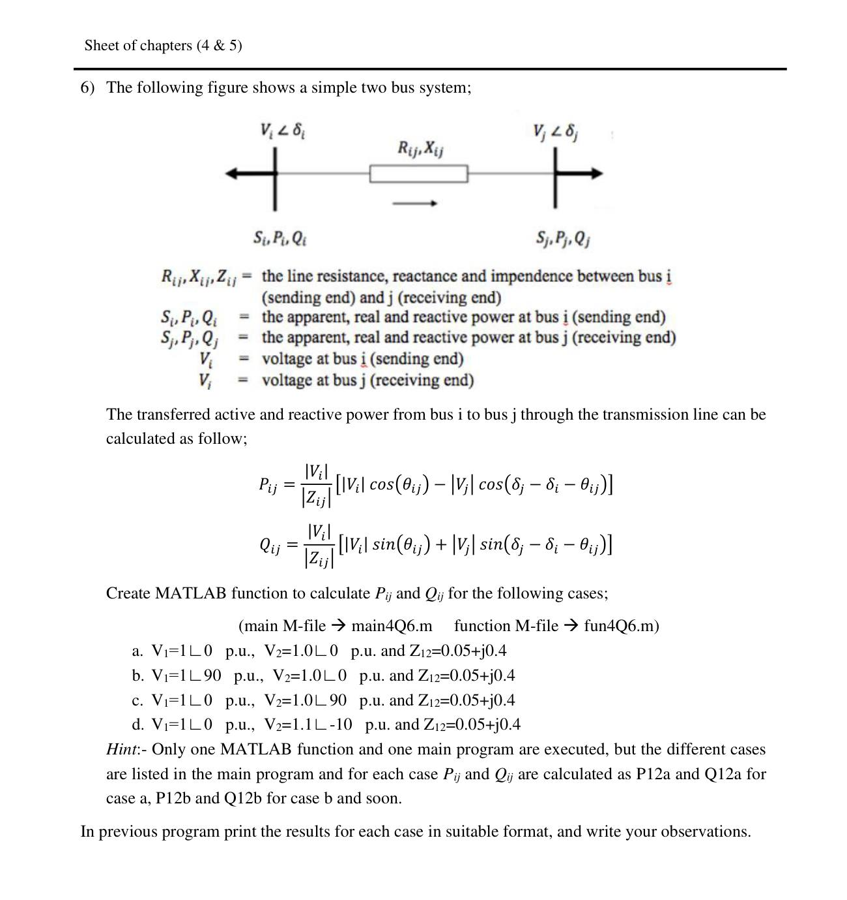
5.1 · Power flow between two buses (function + fprintf)
Write fun4Q6.m for Pij and Qij, then call it from main4Q6.m for the four cases.
P12 and Q12 for cases a–d
5.1
%% fun4Q6.m
function [P,Q]=fun4Q6(V1,d1,V2,d2,Z12,Th12)
P=(V1/Z12)*(V1*cos(Th12)-V2*cos(d2-d1-Th12));
Q=(V1/Z12)*(V1*sin(Th12)+V2*sin(d2-d1-Th12));
end
%% main4Q6.m (case b shown; repeat for a, c, d)
clear all, clc
z12=0.05+j*0.4; Z12=abs(z12); Th12=angle(z12);
V1=1; d1=90/180*pi; V2=1; d2=0/180*pi;
[P12b,Q12b]=fun4Q6(V1,d1,V2,d2,Z12,Th12);
disp('===power flow from bus 1 to bus 2 for case_b===')
fprintf('P12b=%8.4f Q12b=%8.4f \n',P12b,Q12b)
Output: write this on paper under your code
===power flow from bus 1 to bus 2 for case_a===
P12a= 0.0000 Q12a= 0.0000
===power flow from bus 1 to bus 2 for case_b===
P12b= 2.7692 Q12b= 2.1538
===power flow from bus 1 to bus 2 for case_c===
P12c= -2.1538 Q12c= 2.7692
===power flow from bus 1 to bus 2 for case_d===
P12d= 0.4446 Q12d= -0.2638
Line by line
Angles must be in radians for cos and sin: degrees × π/180.
abs and angle split Z into |Z| and θ.
fprintf with two placeholders prints P and Q on one line.
Equal voltages → no flow. Active power flows from the bus whose angle leads; reactive power flows toward the bus with the lower voltage.
Memorise
Write this
It means
Example
x = input('Enter x = ')
Ask the user for a number or a matrix
s = input('Name: ','s')
Ask the user for text
disp('text') disp(x)
Show a line of text / a value
fprintf('V = %8.2f V\n', V)
Print V, 8 spaces wide, 2 decimals, then a new line
V = 3.50 V
%f %d %e %s
Decimal number / integer / exponential / text
num2str(x)
Turn a number into text
disp(['P = ' num2str(P)])
menu('title','A','B')
Show buttons; gives 1 or 2
Try it yourselfWrite the exact output
x=1:3;
fprintf('%6.2f\n',x)
ampere=5;
fprintf('There are %f ampere in the conductor\n',ampere)
disp(['The values are: ' num2str(x)])
1.00
2.00
3.00
There are 5.000000 ampere in the conductor
The values are: 1 2 3
Lecture 6 · Logical Functions and Selection Structures
Lecture 6: making decisions (if, switch, logic gates)
In this lecture
True / false as 1 / 0
find: where a condition is true
if / elseif / else and switch
The doctor's "wrong input → warn → try again → stop" pattern
Logic gates and truth tables
From zero · true, false and if
A comparison is a question with a yes/no answer. MATLAB writes yes as 1 and no as 0.
You write
Answer
5 > 3
1
5 == 3
0 (== asks "equal?"; a single = stores)
5 ~= 3
1 (~= means "not equal")
[1 8 3] > 2
0 1 1 (one answer per element)
find([1 8 3] > 2)
2 3 (the positions of the 1s)
(5>3) & (2>4)
0 (AND: both must be true)
(5>3) | (2>4)
1 (OR: at least one true)
~(5>3)
0 (NOT flips it)
if reads like English
if P < 10 % if this is true...
disp('Low') % ...do this
elseif P <= 50 % otherwise, if this is true...
disp('Moderate')
else % otherwise (none of the above)
disp('High')
end % every if needs an end
Only one block runs: the first whose condition is true.
The input-checking pattern (asked again and again)
a=input('The value of a = ');
if a~=1 && a~=0 % wrong value?
disp('Not allowed value, please re-enter (1 or 0)')
a=input('The value of a = '); % second chance
if a~=1 && a~=0 % still wrong?
disp('Not allowed value, the program should be breaked')
return % stop the whole program
end
end
Logic gates are just these operators on 0/1 values: AND a&b, OR a|b, NOT ~a, XOR xor(a,b). A truth table is all the input combinations written as columns, with the formula applied to whole columns at once.
Sheet 6 Q1
As it appears in the sheet (Sheet 6 Q1)
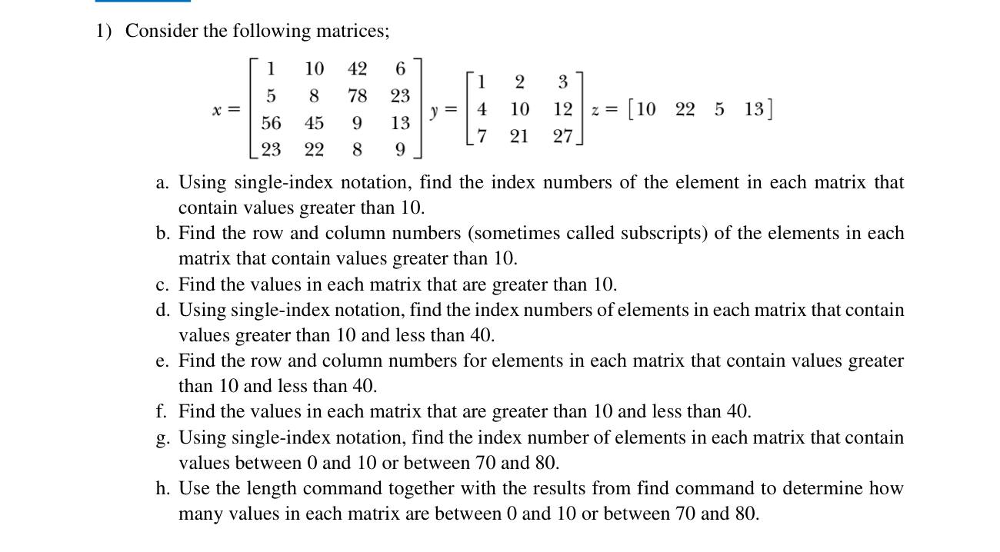
6.1 · find with conditions
Shown for matrix x; y and z work the same way.
positions, row/column numbers and values that meet each condition
6.1
x=[1 10 42 6;5 8 78 23;56 45 9 13;23 22 8 9];
%% a, b, c greater than 10
k=find(x>10)' % single index, counted down the columns
[r,c]=find(x>10); % row and column numbers
v=x(x>10)' % the values themselves
%% d, e, f between 10 and 40
k2=find(x>10 & x<40)'
v2=x(x>10 & x<40)'
%% g, h 0-10 or 70-80
k3=find((x>=0 & x<=10) | (x>=70 & x<=80))';
n=length(k3)
Single index counts down column 1 (1, 5, 56, 23 = positions 1–4), then column 2, and so on.
x(x>10) keeps only the elements where the condition is 1.
& joins two conditions that must both hold; | needs at least one.
8 values above 10; 4 values between 10 and 40; 9 values in 0–10 or 70–80.
Sheet 6 Q2–7, Q9Finals
As it appears in the sheet (Sheet 6 Q2)
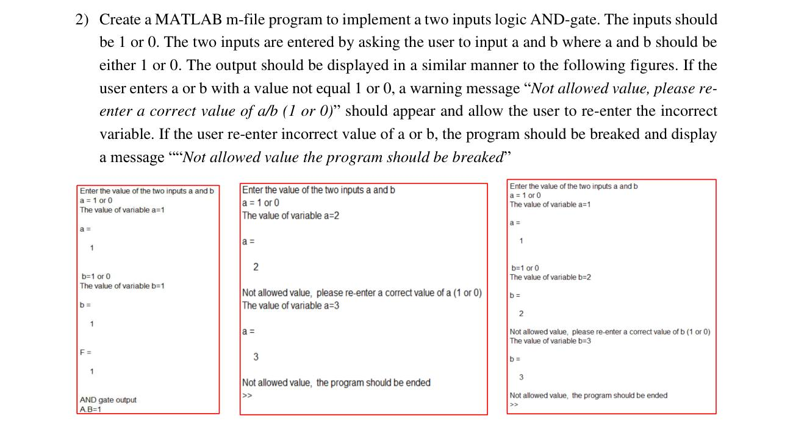
6.2 · Two-input AND gate, written in the doctor's style
Same checking rules as card 6.3, output displayed as "AND gate output A.B=1". Change one line for OR, XOR, NAND… and stack 3 inputs for the 3×8 decoder.
the program
1
clear all, clc
disp('Enter the value of the two inputs a and b');
%% enter variable a
disp('a = 1 or 0')
a=input('The value of variable a=')
if a==1 || a==0
else
disp('Not allowed value, please re-enter a correct value of a (1 or 0)')
a=input('The value of variable a=')
if a==1 || a==0
else
disp('Not allowed value, the program should be ended')
return
end
end
%% enter variable b (same block with b)
%% AND gate
if a==1 & b==1
F=1
else
F=0
end
%% Display output
disp('AND gate output')
fprintf('A.B=%1.0f\n',F)
if a==1 || a==0 with an empty first branch: "if it is fine, do nothing, else…" (the doctor's style).
return ends the program after the second wrong value.
a==1 & b==1: AND is 1 only when both inputs are 1.
Change only the gate line for OR, XOR, NAND…
a = 1, b = 1 → "AND gate output / A.B=1". A second invalid entry stops the program with return.
MUST DOMid 16-11-2025 Q4Final 2022 Q3Sheet 6 Q8 + Q2
As it appears in the exam (Mid 16-11-2025 Q4)
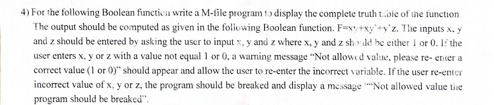
6.3 · Truth table of F = xy + xy' + y'z with input checking
Ask the user for x, y, z (each 1 or 0). A wrong value gives the warning "Not allowed value, please re-enter a correct value (1 or 0)" and one more try. A second wrong value ends the program with "Not allowed value the program should be breaked". Print F for the inputs and the complete truth table.
the program and the truth table
1
Simplify first (shows you understand; the program uses the original form):
F= x(y + y') + y'z = x + y'z
clear all, clc
disp('Enter the value of the three inputs x, y and z')
%% enter x (repeat this block for y and z)
x=input('The value of variable x = ');
if x~=1 && x~=0
disp('Not allowed value, please re-enter a correct value (1 or 0)')
x=input('The value of variable x = ');
if x~=1 && x~=0
disp('Not allowed value the program should be breaked')
return
end
end
%% ... same block for y and for z ...
%% output for the entered values
F=(x&y)|(x&~y)|(~y&z);
fprintf('x=%d y=%d z=%d --> F=%d\n',x,y,z,F)
%% complete truth table
X=[0;0;0;0;1;1;1;1]; Y=[0;0;1;1;0;0;1;1]; Z=[0;1;0;1;0;1;0;1];
FT=(X&Y)|(X&~Y)|(~Y&Z);
disp(' x y z || F')
fprintf('%4d%4d%4d ||%4d\n',[X Y Z FT]')
Output: write this on paper under your code (user enters 1, 0, 1)
Enter the value of the three inputs x, y and z
The value of variable x = 1
The value of variable y = 0
The value of variable z = 1
x=1 y=0 z=1 --> F=1
x y z || F
0 0 0 || 0
0 0 1 || 1
0 1 0 || 0
0 1 1 || 0
1 0 0 || 1
1 0 1 || 1
1 1 0 || 1
1 1 1 || 1
flowchart TD
S([Start]) --> I[/Input x/]
I --> D1{x = 1 or 0?}
D1 -- yes --> N[Next variable]
D1 -- no --> W[/Warning, input x again/]
W --> D2{x = 1 or 0?}
D2 -- yes --> N
D2 -- no --> E[/Program breaked/] --> X([End])
N --> C["F = x·y + x·y' + y'·z"] --> O[/Print F and truth table/] --> X
Line by line
One checking block per variable (x, y, z): wrong → warn → re-enter → still wrong → return.
F written directly from the formula: xy → x&y, y' → ~y, + → |.
Truth table: X, Y, Z are the 8 input rows as columns; the same formula works on whole columns.
[X Y Z FT]' + fprintf prints one row per line.
F = x + y'z: F = 0 only for 000, 010, 011. Verified by enumerating all 8 rows in code.
Sheet 6 Q9Solved in Lecture 6
As it appears in the sheet (Sheet 6 Q9)
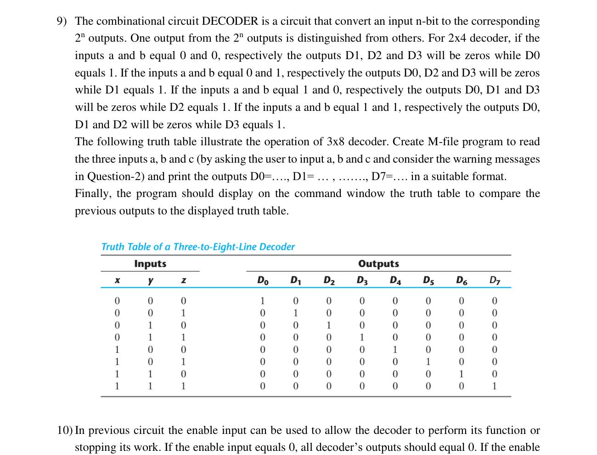
6.4 · 3 × 8 decoder
Read a, b, c with the same checks as 6.2, print D0…D7, then print the full truth table.
the program
6.4
%% read a, b, c with the checking block from 6.2
%% Decoder outputs calculations
D0=~a&~b&~c; D1=~a&~b&c; D2=~a&b&~c; D3=~a&b&c;
D4=a&~b&~c; D5=a&~b&c; D6=a&b&~c; D7=a&b&c;
%% Display result
disp(' a b c || D0 D1 D2 D3 D4 D5 D6 D7')
fprintf('%3.0f%3.0f%3.0f ||%3.0f%3.0f%3.0f%3.0f%3.0f%3.0f%3.0f%3.0f\n', ...
[a,b,c,D0,D1,D2,D3,D4,D5,D6,D7])
%% Display truth table
disp('Truth table of 3x8 decoder')
a=[0;0;0;0;1;1;1;1]; b=[0;0;1;1;0;0;1;1]; c=[0;1;0;1;0;1;0;1];
D=eye(8); % one 1 per row (the lecture types the 8 columns)
fprintf('%3.0f%3.0f%3.0f ||%3.0f%3.0f%3.0f%3.0f%3.0f%3.0f%3.0f%3.0f\n',[a b c D]')
Output: write this on paper under your code (user enters 1, 0, 0)
the program with switch (b); the menu version (Q12)
6.5
clear all, clc
rate=2.89; % $ per gallon
unit=input('Enter gallons or liters: ','s');
switch unit
case 'gallons'
factor=1;
case 'liters'
factor=0.264;
otherwise
factor=0;
disp('Not available')
end
if factor~=0
volume=input('Enter the amount of gasoline: ');
cost=volume*factor*rate;
fprintf('The cost is $%.2f\n',cost)
end
%% Q12 menu version: replace the input + switch with
choice=menu('Select the unit','gallons','liters');
switch choice
case 1, factor=1;
case 2, factor=0.264;
end
Output: write this on paper under your code
Enter gallons or liters: liters
Enter the amount of gasoline: 10
The cost is $7.63
Line by line
's' in input reads text, needed to compare with 'gallons'.
switch jumps straight to the matching case; otherwise catches anything else.
menu shows buttons and returns 1 or 2, so the cases become numbers.
10 litres → 10 × 0.264 × 2.89 = $7.63; 10 gallons → $28.90. For the if/else version (part a) compare text with strcmp(unit,'gallons') (extra, not from the slides).
Memorise
Write this
It means
Example
== ~= < <= > >=
Compare: gives 1 (true) or 0 (false)
5<1 → 0
& | ~
AND, OR, NOT (&& and || for single values in if)
xor(a,b)
Exclusive OR; ~xor(a,b) = XNOR
find(x>10)
Positions where the condition is true
if … elseif … else … end
Run only one of several blocks
switch … case … otherwise … end
Choose a block by the value of a variable
return
Stop the program (after the second wrong input)
Exam traps
if on a vector is true only if all elements are true: age2=[15,17,25,55,75]; if age2<16 is false, and so are the <18 and <70 tests, so the slide prints "Drivers over 70 require a special license".
a==1 || a==0 means "a is valid". Its opposite is a~=1 && a~=0, not a~=1 || a~=0.
= assigns, == compares.
A text input needs input('..','s') before a switch on strings.
Tracing a loop by hand in a table (exam question type)
From zero · how a loop runs
A loop repeats the lines between its first line and end.
for k = 1:4 % k takes 1, then 2, then 3, then 4
s(k) = k^2; % this line runs 4 times
end % s = 1 4 9 16
n = 0; % start value
while n < 3 % check: is n < 3 ? yes -> run the body
n = n + 1 % prints n = 1, n = 2, n = 3
end % after n = 3 the check fails -> stop
The tracing table: how to "execute" a loop on paper
Make one column per variable and one row per pass. Example: count the scores above 90 in [76 45 98 97]:
k
scores(k)
> 90?
count
start
—
—
0
1
76
no
0
2
45
no
0
3
98
yes
1
4
97
yes
2
Three patterns cover most questions: a counter (count=0; … count=count+1;), a running sum (s=0; … s=s+x(k);) and a running product (fac=1; … fac=fac*m;). Always set the start value before the loop.
break leaves the loop at once. continue skips the rest of this pass and goes to the next one.
Sheet 7 Q1
As it appears in the sheet (Sheet 7 Q1)
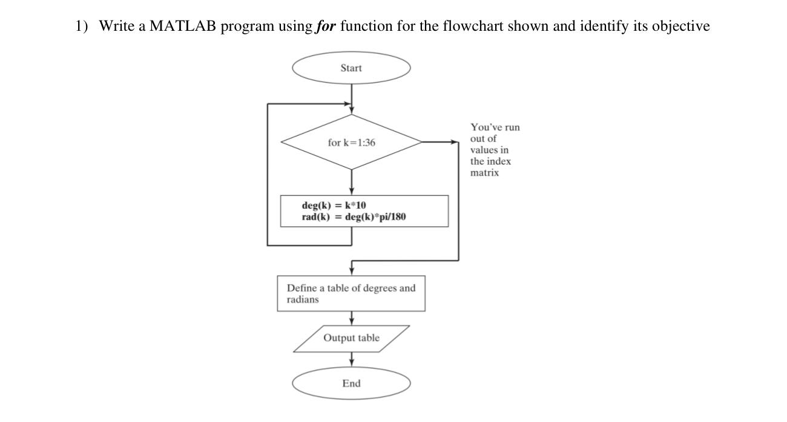
7.1 · Read a for-loop flowchart: degrees to radians
Write the for loop for the flowchart and say what it does.
the program and its objective
7.1
clear all, clc
for k=1:36
deg(k)=k*10;
rad(k)=deg(k)*pi/180;
end
table=[deg' rad'];
disp(' degrees radians')
fprintf('%8.0f %10.4f\n',table')
The diamond "for k=1:36" becomes the for line; the rectangle becomes the two lines inside.
After the loop: build the table and print it (the parallelogram = output).
Objective: a conversion table from degrees to radians, 10° to 360° in steps of 10°.
Sheet 7 Q4–5Solved in Lecture 7
As it appears in the sheet (Sheet 7 Q4)
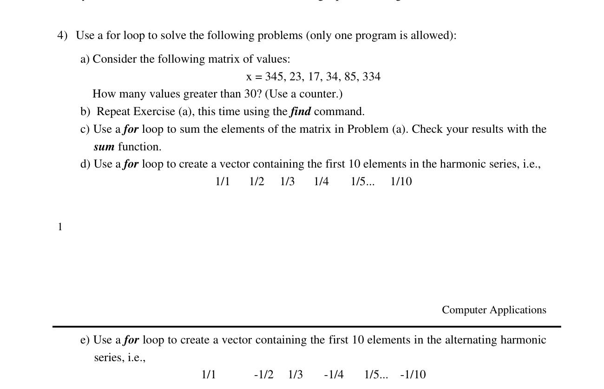
7.2 · Counter, find, running sum, series
x = 345, 23, 17, 34, 85, 334. One program for a–e.
a–e
7.2
clear all, clc
x=[345 23 17 34 85 334];
%% a counter
k=0;
for m=1:length(x)
if x(m)>30
k=k+1;
end
end
fprintf('values greater than 30 = %d\n',k)
%% b find
k2=length(find(x>30))
%% c sum
s=0;
for m=1:length(x)
s=s+x(m);
end
fprintf('for-loop sum = %d, sum function = %d\n',s,sum(x))
%% d, e series
for k=1:10
h(k)=1/k;
alt(k)=(-1)^(k+1)/k;
end
h, alt
Output: write this on paper under your code
values greater than 30 = 4
k2 = 4
for-loop sum = 838, sum function = 838
h = 1.0000 0.5000 0.3333 0.2500 ... 0.1000
alt = 1.0000 -0.5000 0.3333 -0.2500 ... -0.1000
Line by line
length(x) = 6, so the loop runs 6 times.
(-1)^(k+1) is +1 for odd k and −1 for even k: that makes the signs alternate.
4 values above 30 (345, 34, 85, 334); sum = 838. Q5 asks the same with while: m=1; while m<=length(x) … m=m+1; end.
The user enters one value or a vector. Every value must be a positive integer, otherwise warn and re-enter; a second wrong entry ends the program. Print each factorial as shown in the exam.
the program, the output for x = [5 4 3 20], the flowchart
1
clear all, clc
disp('Enter a positive and integer value/s of variable x')
x=input('The value of variable x = ')
if any(x<=0 | round(x)~=x)
disp('Not allowed value, re-enter a positive and integer value/s')
x=input('The value of variable x = ')
if any(x<=0 | round(x)~=x)
disp('Not correct entered value/s, the program should be ended')
return
end
end
disp('======== Program Output ========')
disp('Factorial of variable x')
for k=1:length(x)
fac=1;
for m=1:x(k)
fac=fac*m;
end
fprintf(' For x= %8.0f ----- The factorial= %8.0f\n',x(k),fac)
end
Output: write this on paper under your code
Enter a positive and integer value/s of variable x
The value of variable x = [5 4 3 20]
x =
5 4 3 20
======== Program Output ========
Factorial of variable x
For x= 5 ----- The factorial= 120
For x= 4 ----- The factorial= 24
For x= 3 ----- The factorial= 6
For x= 20 ----- The factorial= 2432902008176640000
2020 version (one number, while check): while a<=0 || round(a)~=a, disp('Please enter a positive integer number'), a=input('Enter the number'); end
flowchart TD
S([Start]) --> I[/Input x/]
I --> D{All x positive integers?}
D -- no --> W[/Warning, input x again/] --> D2{All valid?}
D2 -- no --> E[/Program ended/] --> Z([End])
D2 -- yes --> K
D -- yes --> K[k = 1]
K --> L{k ≤ length of x?}
L -- yes --> F[fac = 1, multiply 1·2·…·x of k] --> P[/Print x of k and fac/] --> K2[k = k + 1] --> L
L -- no --> Z
Line by line
any(...) is true if at least one element breaks the rule.
x<=0 | round(x)~=x: not positive, or not a whole number.
Outer loop over the entered values; inner loop multiplies 1 × 2 × … × x(k).
fac=1 must be reset for every value, inside the outer loop.
MUST DOMid 2020 Q4Final 2021 Q5 · Final 2023 bSheet 7 Q6
As it appears in the exam (Mid 2020 Q4)
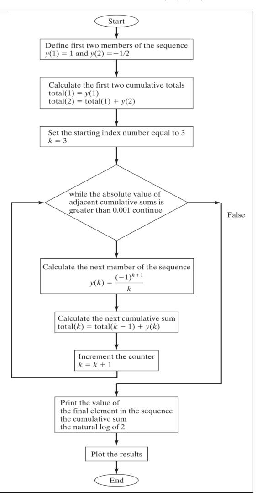
7.4 · Execute the flowchart by hand for k = 2 … 6
Flowchart: y(1) = 1, y(2) = −1/2; total(1) = y(1), total(2) = total(1) + y(2); k = 3; while |total(k) − total(k−1)| > 0.001: y(k) = (−1)k+1/k, total(k) = total(k−1) + y(k), k = k + 1. Print the last element, the sum and ln 2; plot.
the values at each k, what the flowchart does, a matrix-form program
1
k
y(k)
total(k)
|total(k) − total(k−1)|
> 0.001?
1
1
1
—
—
2
−1/2
0.5000
0.5000
yes
3
1/3
0.8333
0.3333
yes
4
−1/4
0.5833
0.2500
yes
5
1/5
0.7833
0.2000
yes
6
−1/6
0.6167
0.1667
yes
It is the alternating harmonic series, which converges to ln 2 = 0.6931. It stops when 1/k ≤ 0.001, near k = 1000.
2
%% matrix form only (no loop) - the doctor's answer
k=1:1000;
y=(-1).^(k+1)./k;
total=cumsum(y);
fprintf('final element = %f, sum = %f, ln(2) = %f\n',y(end),total(end),log(2))
plot(k,total), title('Using matrix'), grid on
Swipe sideways →
Line by line
Trace: write k, y(k), total(k) and the check for each pass, as in the table.
Matrix form: k=1:1000 makes all k at once; .^ and ./ make every term; cumsum gives the running totals.
The sums swing above and below ln 2 and close in on it.
totals 1, 0.5, 0.8333, 0.5833, 0.7833, 0.6167 …; the sum tends to ln 2 = 0.6931 (0.6936 when the loop stops)
Sheet 7 Q6Final 2023 Q2b
As it appears in the sheet (Sheet 7 Q6, left flowchart)
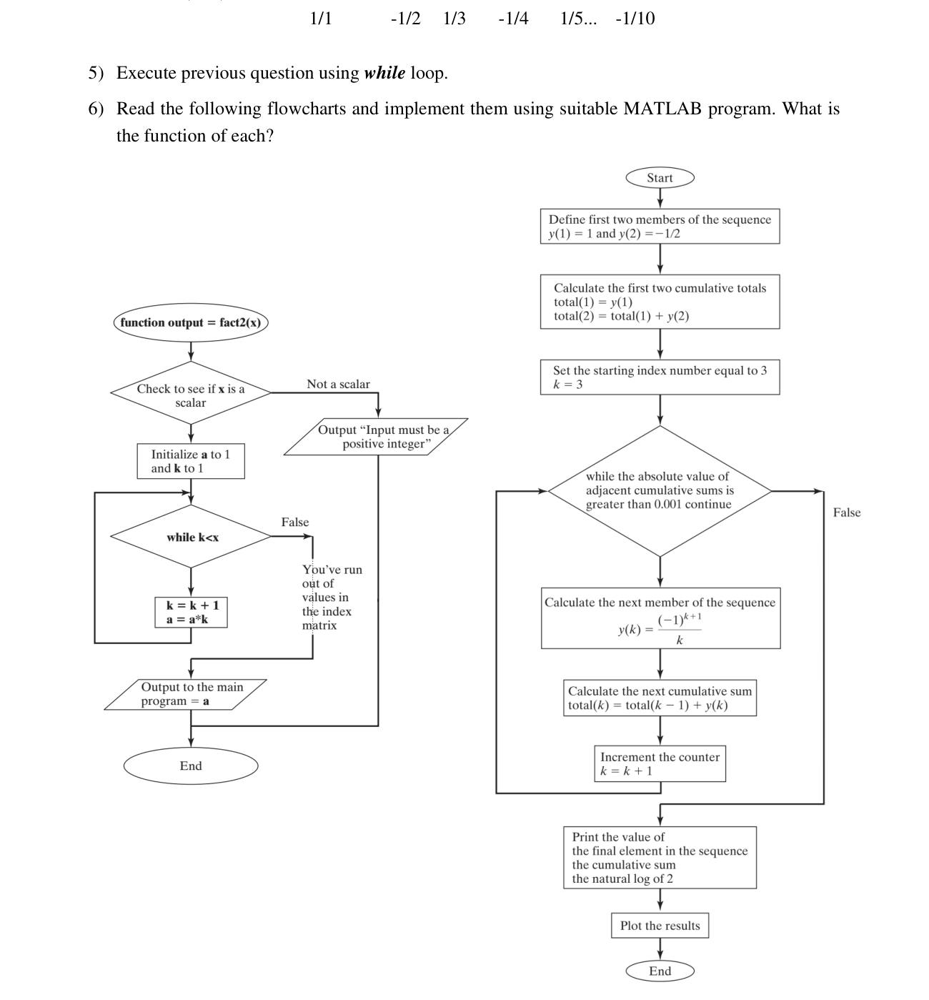
7.5 · Read a while-loop flowchart: fact2
Implement the left flowchart as a function and say what it does.
the function and its purpose
7.5
function output=fact2(x)
if length(x)>1 % x is not a scalar
disp('Input must be a positive integer')
output=[];
else
a=1; k=1;
while k<x
k=k+1;
a=a*k;
end
output=a;
end
end
pass
k
a
check while k < x
start
1
1
—
1
2
2
2 < 5 yes
2
3
6
3 < 5 yes
3
4
24
4 < 5 yes
4
5
120
5 < 5 no → stop
Line by line
A function because the flowchart starts with "function output = fact2(x)".
"Check to see if x is a scalar" → length(x)>1 means it is a list, not one number.
Trace it with x = 5 as in the table.
fact2(5) = 120: the flowchart computes the factorial of x (the right flowchart is card 7.4).
Sheet 7 Q7
As it appears in the sheet (Sheet 7 Q7)
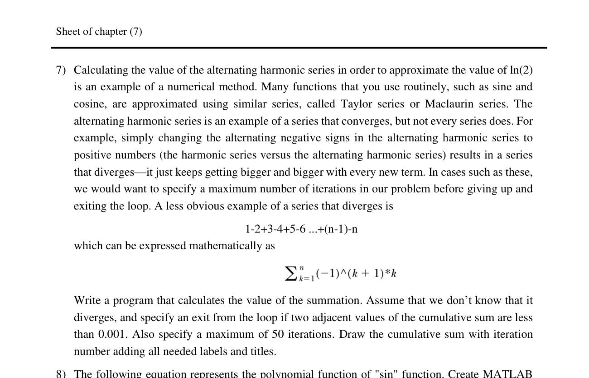
7.6 · A loop with two ways out: break or 50 iterations
Sum 1 − 2 + 3 − 4 + … ; stop if two adjacent sums differ by less than 0.001, or after 50 iterations. Plot the sum.
the program, the result, the plot
7.6
clear all, clc
total(1)=1; n=1;
while n<50
n=n+1;
total(n)=total(n-1)+(-1)^(n+1)*n;
if abs(total(n)-total(n-1))<0.001
break
end
end
plot(1:n,total,'-o'), grid on
title('Cumulative sum of 1-2+3-4+...')
xlabel('iteration'), ylabel('cumulative sum')
fprintf('After %d iterations the sum = %d\n',n,total(n))
Output: write this on paper under your code
After 50 iterations the sum = -25
Swipe sideways →
Line by line
while n<50 is the safety limit.
break is the convergence exit; here it never happens.
(-1)^(n+1)*n gives +1, −2, +3, −4 …
The series diverges: the sums go 1, −1, 2, −2, 3, −3 … The difference between neighbours is n, never below 0.001, so the 50-iteration limit stops it at −25.
Sheet 7 Q9–10Sheet 2 Q6–7 · Sheet 3 Q10
As it appears in the sheet (Sheet 7 Q10)
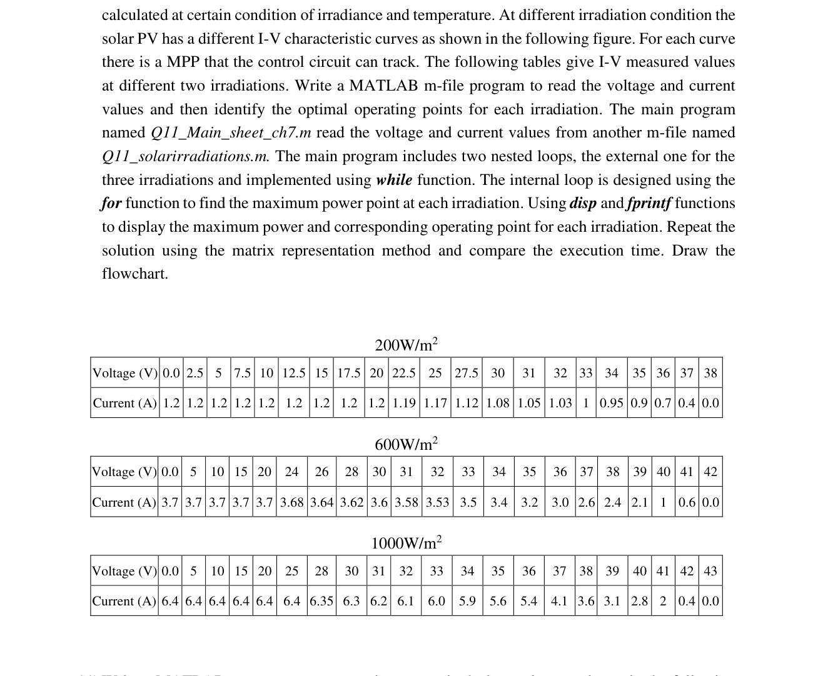
7.7 · Maximum power point of a PV panel with loops
Read the I-V table for each irradiation, compute P = V·I, and find the maximum power and its operating point with an outer while loop (irradiations) and an inner for loop (points).
Pmax, V and I at MPP for 200, 600, 1000 W/m²
1
V=[V1;V2;V3]; I=[I1;I2;I3]; % each row = one irradiation (21 points)
k=1;
while k<=3
Pmax(k)=0;
for n=1:length(V1)
P(k,n)=V(k,n)*I(k,n);
if P(k,n)>Pmax(k)
Pmax(k)=P(k,n); V_op(k)=V(k,n); I_op(k)=I(k,n);
end
end
fprintf('Pmax_%d = %8.2f at V = %6.2f & I = %6.2f\n',k,Pmax(k),V_op(k),I_op(k))
k=k+1;
end
%% matrix form: P=V.*I; [Pmax,n]=max(P,[],2)
Output: write this on paper under your code
Pmax_1 = 33.00 at V = 33.00 & I = 1.00
Pmax_2 = 115.60 at V = 34.00 & I = 3.40
Pmax_3 = 200.60 at V = 34.00 & I = 5.90
Swipe sideways →
Line by line
V=[V1;V2;V3]: one row per irradiation.
Outer while loop: k = 1, 2, 3 (irradiations). Inner for loop: every point on that curve.
Each time a bigger P is found, remember P, V and I.
Print V_op(k), I_op(k), not V1(1) (that was the slide's mistake).
200 W/m²: 33.0 W at 33 V, 1.0 A · 600 W/m²: 115.6 W at 34 V, 3.4 A · 1000 W/m²: 200.6 W at 34 V, 5.9 A. Single-panel table (Sheet 2 Q6): 0.4934 W at 4.934 V, 0.10 A.
Sheet 7 Q11–12: same circuit as card 2.3, with loops
Q11 is card 2.3 (for loop over E2). Q12 asks for E2 with a while loop (steps of 0.5 V assumed):
z=[4 -2; -2 6]; E2=0;
I=inv(z)*[6-E2; 2+E2];
while abs(I(1))>1e-6 && E2<16
E2=E2+0.5;
I=inv(z)*[6-E2; 2+E2];
end
fprintf('I_R1 = 0 at E2 = %.1f V\n',E2) % 10.0 V
Memorise
Write this
It means
Example
for k=1:10 … end
Repeat 10 times, k = 1, 2, …, 10
while cond … end
Repeat while cond is true
count=0; … count=count+1;
Counter
s=0; … s=s+x(k);
Running sum
fac=1; … fac=fac*m;
Factorial
break continue
Leave the loop / skip to the next pass
cumsum(y)
Running total in one line (matrix form, no loop)
cumsum([1 5 3]) → 1 6 9
Exam traps
A while loop whose condition never changes runs forever.
while(x<=0) for input checking: ask again inside the loop.
MATLAB is case-sensitive: While (capital W, on a slide) is an error.
Matrix (vectorised) form: shorter and much faster to run. Loops: easier when each step needs the previous one, or to stop early.
Script vs function M-file
A script shares the workspace and runs top to bottom. A function starts with function, has private variables and inputs/outputs, and its file name must equal the function name.
More or fewer series terms
Doubling the terms improves accuracy, most of all for large x. Halving gives large errors away from 0. The built-in sin is accurate to machine precision.
Odd harmonics
A fundamental plus odd harmonics gives half-wave symmetry: v(t + T/2) = −v(t). Even harmonics break it; a dc term shifts the wave up.
rand vs randn
rand: uniform between 0 and 1. randn: normal, mean 0, variance 1. Range a–b: a+(b-a)*rand(m,n).
& vs &&
& and | work element by element on arrays. && and || work on single values and stop early (short circuit); use them in if / while.
break / continue / return
break leaves the loop; continue jumps to the next pass; return ends the whole script or function.
disp vs fprintf
disp prints a value or text as-is. fprintf controls width, decimals and line breaks and repeats its format for a matrix.
' vs .'
' transposes and conjugates; .' only transposes. They are the same for real numbers.
Variable names
Start with a letter; letters, digits, underscore; case-sensitive; no keywords (if, end…). Allowed: test, Test, my_book, group_one, zzaAbc, Log. Not allowed: if, my-book, 1stgroup, names with ? or #. "sin" is allowed but hides the built-in function. Check with isvarname, iskeyword, which.
Desktop windows
Command Window (type and run), Command History (past commands), Workspace (variables in memory), Current Folder (files MATLAB can see), Editor (M-files), Document/Variable editor (spreadsheet view). diary saves a session to a file.
Verification audit: mistakes found in your material
MATLAB and Octave aren't installed on this computer, so I recomputed every number in this guide by reproducing MATLAB's behaviour in Python/numpy: matrix statistics, mesh and nodal solutions, 3-phase sweeps, harmonic currents and powers, series sums, factorials, the flowchart trace, PV maximum power points, the feeder results, relay times and two-bus powers. Everything in the answer cards matches. The doctor's model answers check out except for the items below.
#
Where
Problem
Correct version
1
Mid 2020 Q2 model answer
[a,b]=find(I1==0) compares a computed current with exactly 0. Recomputing gives I1 = 2.2×10⁻¹⁶ at E2 = 10 V, not 0, so the program can wrongly print "none of the values…"
b=find(abs(I1)<1e-6); if isempty(b) … (card 2.3)
2
Lecture 7, Sheet 7 Q10 output
Pmax values are right but the printed operating points are wrong: "V = 0.00 & I = 1.20", "V = 5.00 & I = 3.70", "V = 10.00 & I = 6.40". The fprintf prints V1(1), I1(1) instead of V_op(k), I_op(k)
33 W at 33 V, 1.0 A; 115.6 W at 34 V, 3.4 A; 200.6 W at 34 V, 5.9 A (card 7.7)
3
Lecture 3, Sheet 3 Q8 solution
Code uses 25*sin(2*t-pi/2), but the question says 20 sin(2ωt − π/2). The comment also says "32 mA", while the question has no unit
i=32+50*sin(t)+20*sin(2*t-pi/2)
4
Lecture 4/5, Sheet 4 Q3 (fun4Q3c)
for n=0:1:20 adds 21 terms, not 20; output=0 has no semicolon, so it prints a stray "output = 0"
output=0; for n=0:19
5
Lecture 7, while-loop slide
While(a<10) with a capital W is an error (MATLAB is case-sensitive)
while a<10
6
Mid 2020 Q4 model answer
Format '%2.8f% \n' has a stray %. The loop ends at k = 1001 in floating point (|1/1000| is not > 0.001), not exactly at 1000
'%2.8f \n'
7
Sheet 1 Q19 solution page vs Lecture 2
The sheet's code uses I=S/(3*220) (÷660); the lecture uses S/(sqrt(3)*380) (÷658.2). CB rating 4115 A vs 4126 A
Use the lecture's √3·380 version
8
Lecture 6, OR-gate / decoder code
Copy-paste prompts: c=input('The value of variable a=') asks for "a" while reading c. Messages say "ended" where the sheet says "breaked"
Match each prompt to its variable
9
Lecture 1, rounding table
The function is written "fx(x)"; it is fix(x)
fix(8.6) → 8
10
Lecture 5, fprintf slide
Text says "the value of cows" (left over from the textbook); the variable is ampere
wording only
11
Mid 16-11-2025 Q2
"Demand factor" is computed from the simultaneous and individual maxima, which is the diversity / coincidence factor
Write the formula you use (card 2.8 note)
What I could not verify
I couldn't run the MATLAB code itself (no MATLAB here). The numbers were recomputed independently, and the code follows the doctor's own working solutions line by line.
Plots involving rand (houses, voltage fluctuation) change on every run; only their method is given.
The faded limits in Nov 2025 Q5 (10 W and 50 W) are read from a low-contrast scan.